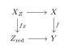
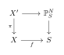
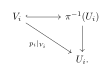

Morphisms of Schemes
Global Properties of Morphisms
Global Properties of Morphisms
In the theory of schemes, we often study properties of morphisms \mathcal{P} (e.g., being finite, flat, smooth, proper). To formalize this, we define standard meta-properties that a property \mathcal{P} might possess.
Definition 1.1 (Properties of Morphisms). Let \mathcal{P} be a property of morphisms of schemes.
Local on the target (Target-local): A morphism f: X \to Y has property \mathcal{P} if and only if for any open covering \{V_i\} of Y, the induced morphism f|_{f^{-1}(V_i)}: f^{-1}(V_i) \to V_i has property \mathcal{P} for each i.
Stable under composition: If f: X \to Y and g: Y \to Z have \mathcal{P}, then g \circ f has \mathcal{P}.
Stable under base change: If f: X \to Y has \mathcal{P}, then for any morphism Y' \to Y, the projection f': X \times_Y Y' \to Y' has \mathcal{P}.
Stable under products: If f: X \to Y and f': X' \to Y' have \mathcal{P}, then f \times f': X \times X' \to Y \times Y' has \mathcal{P} (over the appropriate base product).
Cancellation (or Cancellation of the right): If g \circ f has \mathcal{P} and g is separated (or satisfies some other mild condition), then f has \mathcal{P}. (Note: Specific definitions vary, but this is a common form).
Lemma 1.1 (Common Principal Open Neighborhood). Let X be a scheme. Let U = \operatorname{Spec}A and V = \operatorname{Spec}B be two affine open subsets of X. For any point x \in U \cap V, there exists an open neighborhood W of x such that W \subseteq U \cap V, and W is a distinguished open set (distinguished open) in both U and V.
That is, there exist f \in A and g \in B such that: W = D_U(f) = D_V(g).
Proof. Since U and V are open in X, their intersection U \cap V is open in X.
Step 1: Shrinking in U. Consider x as a point in the affine scheme U. Since U \cap V is an open neighborhood of x inside U, and the distinguished open sets \{D_U(h)\}_{h \in A} form a basis for the Zariski topology on U, there exists an element h \in A such that: x \in D_U(h) \subseteq U \cap V.
Step 2: Shrinking in V. Now consider the set D_U(h). It is an open subset of X contained in V. Since \{D_V(k)\}_{k \in B} forms a basis for the topology on V, there exists an element k \in B such that: x \in D_V(k) \subseteq D_U(h).
Step 3: Finding the common set. We now have x \in D_V(k) \subseteq D_U(h). Note that D_V(k) is a distinguished open set in V, hence it is affine (isomorphic to \operatorname{Spec}B_k). Since D_V(k) is a subset of U (specifically a subset of D_U(h)), we can view the element h \in A as a function on D_V(k) by restricting the section. More precisely, let \rho: A \to \Gamma(D_V(k), \mathcal{O}_X) = B_k be the restriction homomorphism. Let \bar{h} = \rho(h) \in B_k.
The condition D_V(k) \subseteq D_U(h) implies that for any point y \in D_V(k), the function h does not vanish at y (i.e., h_y \notin \mathfrak{m}_y). However, we want to perform a further refinement to ensure the set is principal in U. Let’s reverse the inclusion logic for a cleaner construction: The set D_V(k) is open in U. Since D_U(h) is affine (isomorphic to \operatorname{Spec}A_h), and D_V(k) is open in D_U(h), D_V(k) can be covered by principal opens of A_h. Thus, there exists \ell \in A_h such that: x \in D_{A_h}(\ell) \subseteq D_V(k). Recall that a principal open of a principal open is principal. Specifically, \ell can be written as a/h^n. The set D_{A_h}(\ell) corresponds to the locus in D_U(h) where a/h^n \neq 0, which is the locus where a \neq 0 and h \neq 0. This is exactly D_U(a \cdot h). Let f = a \cdot h \in A. So we have: W = D_U(f) \subseteq D_V(k).
Step 4: Making it principal in V. Now W = D_U(f) is a subset of D_V(k). Is W principal in V? Consider f restricted to D_V(k) = \operatorname{Spec}B_k. Let this restriction be f' \in B_k. The set W is the locus inside D_V(k) where f does not vanish. Algebraically, this is D_{B_k}(f'). Again, by transitivity of principal opens, D_{B_k}(f') is isomorphic to a distinguished open set D_V(g) for some g \in B (specifically, if f' = b/k^m, then D_{B_k}(f') = D_V(b \cdot k)).
Thus, W = D_U(f) = D_V(g) is a distinguished open set in both U and V. ◻
Lemma 1.1 (Preimage of Principal Open is Principal Open). Let \phi: A \to B be a ring homomorphism, inducing a morphism of affine schemes f: \operatorname{Spec}B \to \operatorname{Spec}A. Let h \in A. Then the inverse image of the distinguished open set D(h) \subseteq \operatorname{Spec}A is a distinguished open set in \operatorname{Spec}B. Specifically: f^{-1}(D(h)) = D(\phi(h)).
Proof. This follows directly from the definition of the continuous map induced by a ring homomorphism. Recall that for a point \mathfrak{q} \in \operatorname{Spec}B, its image is f(\mathfrak{q}) = \phi^{-1}(\mathfrak{q}) \in \operatorname{Spec}A. We have: \begin{align*} \mathfrak{q} \in f^{-1}(D(h)) &\iff f(\mathfrak{q}) \in D(h) \\ &\iff h \notin f(\mathfrak{q}) \\ &\iff h \notin \phi^{-1}(\mathfrak{q}) \\ &\iff \phi(h) \notin \mathfrak{q} \\ &\iff \mathfrak{q} \in D(\phi(h)). \end{align*} Thus, the preimage is exactly the distinguished open set defined by the image of the element h. ◻
Morphisms of Finite Type
Having established the basic local properties of morphisms, we now introduce finiteness conditions. These conditions are the geometric translations of classical algebraic properties, such as a ring being a finitely generated algebra or a finitely generated module over a base ring.
Definition 1.2 (Morphisms of Finite Type). Let f: X \to Y be a morphism of schemes.
f is locally of finite type if there exists an affine open cover \{V_i = \operatorname{Spec}B_i\} of Y such that for each i, f^{-1}(V_i) admits an affine open cover \{U_{ij} = \operatorname{Spec}A_{ij}\}, where each A_{ij} is a finitely generated B_i-algebra.
f is of finite type if it is locally of finite type and quasi-compact. Equivalently, f is of finite type if there exists an affine open cover \{V_i = \operatorname{Spec}B_i\} of Y such that each f^{-1}(V_i) can be covered by a finite number of affine open subsets U_{ij} = \operatorname{Spec}A_{ij}, with each A_{ij} being a finitely generated B_i-algebra.
Cancellation Properties for Finite Type
A recurring theme in scheme theory is determining when properties of a composition g \circ f descend to the morphism f. This is particularly well-behaved for finiteness conditions, provided the target morphism g satisfies mild separation or finiteness hypotheses.
Lemma 1.1 (Cancellation Properties for Finite Type). Let f: X \to Y and g: Y \to Z be morphisms of schemes.
If g \circ f is locally of finite type, then f is locally of finite type.
If g \circ f is of finite type, and g is quasi-separated, then f is of finite type.
Proof. To prove (i), we factor f through its graph: X \xrightarrow{\Gamma_f} X \times_Z Y \xrightarrow{p_2} Y.
The graph morphism \Gamma_f is the base change of the diagonal \Delta_{Y/Z}. For every morphism of schemes, the diagonal is an immersion. Hence \Gamma_f is an immersion, and therefore is locally of finite type. Since p_2 is locally of finite type, so is f=p_2\circ\Gamma_f.
For (ii), we must additionally show that f is quasi-compact. Since g is quasi-separated, \Delta_{Y/Z} is quasi-compact. Therefore its base change \Gamma_f is quasi-compact. The assumption that g is quasi-separated implies that the diagonal \Delta_{Y/Z} is quasi-compact. Thus, \Gamma_f is a quasi-compact immersion. Since g \circ f is of finite type, it is quasi-compact, meaning its base change p_2 is also quasi-compact. The composition f = p_2 \circ \Gamma_f of quasi-compact morphisms is quasi-compact. Combined with (i), f is of finite type. ◻
A powerful consequence of our cancellation lemma is that any algebraic map between standard schemes automatically inherits finiteness, saving us from checking affine covers manually.
Proposition 1.1 (Morphisms of Standard Schemes are of Finite Type). Let S be a standard base ring. If X and Y are standard schemes over S, then any S-morphism f: X \to Y is of finite type.
Proof. Let h: X \to \operatorname{Spec}S and g: Y \to \operatorname{Spec}S be the structural morphisms of X and Y, respectively. By the definition of an S-morphism, we have h = g \circ f.
Because X is a standard scheme over S, the morphism h = g \circ f is of finite type. Because Y is a standard scheme over S, the morphism g is separated (which trivially implies it is quasi-separated) and of finite type (which implies it is locally of finite type).
Applying Lemma (ii) directly to the composition h = g \circ f, we immediately conclude that f is of finite type. ◻
Constructible Sets
In the study of Noetherian topological spaces, constructible sets form a natural class of subsets that are well-behaved under standard set-theoretic operations. There are two standard ways to define them: one constructive (via boolean operations) and one structural (via locally closed sets). We will state both, prove they are equivalent, and then establish a powerful characterization of constructibility using dense open subsets.
Definition 1.3 (Locally Closed Set). Let X be a topological space. A subset Z \subseteq X is called locally closed if it can be written as the intersection of an open set and a closed set. Equivalently, Z is locally closed if it is open in its closure \overline{Z}.
Definition 1.4 (Constructible Set (Structural Definition)). Let X be a Noetherian topological space. A subset Y \subseteq X is constructible if it is a finite union of locally closed subsets of X.
Definition 1.5 (Constructible Set (Boolean Definition)). Let X be a Noetherian topological space. A subset Y \subseteq X is constructible if it belongs to the boolean algebra generated by the open subsets of X. That is, the collection of constructible sets is the smallest class of subsets containing all open sets and closed under finite intersections, finite unions, and complements.
We now prove that these two definitions are identical. In doing so, we explicitly demonstrate that any boolean computation (union, intersection, complementation) on constructible sets yields another constructible set.
Proposition 1.1 (Equivalence of Definitions and Boolean Closure). Let X be a Noetherian topological space. The structural definition and the boolean definition of constructible sets are equivalent. Consequently, the collection of finite unions of locally closed sets forms a boolean algebra.
Proof. Let \mathcal{C}_1 be the collection of all finite unions of locally closed subsets of X. Let \mathcal{C}_2 be the boolean algebra generated by the open subsets of X. We wish to show \mathcal{C}_1 = \mathcal{C}_2.
First, we show \mathcal{C}_1 \subseteq \mathcal{C}_2. A locally closed set Z can be written as U \cap C, where U is open and C is closed. Since C = X \setminus V for some open set V, Z = U \cap (X \setminus V). Because U and V are open, Z is formed by boolean operations on open sets, so Z \in \mathcal{C}_2. Since \mathcal{C}_2 is closed under finite unions, any finite union of locally closed sets is also in \mathcal{C}_2. Thus, \mathcal{C}_1 \subseteq \mathcal{C}_2.
Next, we show that \mathcal{C}_1 is a boolean algebra. If we establish this, then because \mathcal{C}_1 contains all open sets (an open set U = U \cap X is locally closed), it must contain the boolean algebra generated by open sets, forcing \mathcal{C}_2 \subseteq \mathcal{C}_1.
Contains Open Sets: For any open set U, U = U \cap X, which is locally closed and thus in \mathcal{C}_1.
Closure under Finite Unions: This is immediate from the definition of \mathcal{C}_1.
Closure under Finite Intersections: Let A, B \in \mathcal{C}_1, where A = \bigcup_{i=1}^n A_i and B = \bigcup_{j=1}^m B_j with A_i, B_j locally closed. By distributivity, A \cap B = \bigcup_{i,j} (A_i \cap B_j). If A_i = U_i \cap C_i and B_j = V_j \cap D_j (with U_i, V_j open and C_i, D_j closed), then A_i \cap B_j = (U_i \cap V_j) \cap (C_i \cap D_j). Since U_i \cap V_j is open and C_i \cap D_j is closed, A_i \cap B_j is locally closed. Thus, A \cap B is a finite union of locally closed sets, so A \cap B \in \mathcal{C}_1.
Closure under Complements: It suffices to show that the complement of a locally closed set is in \mathcal{C}_1. Let Z = U \cap C be locally closed. By De Morgan’s Laws, X \setminus Z = X \setminus (U \cap C) = (X \setminus U) \cup (X \setminus C). The set X \setminus U is closed (hence locally closed), and X \setminus C is open (hence locally closed). Thus, X \setminus Z \in \mathcal{C}_1. If we take the complement of an arbitrary element in \mathcal{C}_1, say \bigcup_{i=1}^n Z_i, we get \bigcap_{i=1}^n (X \setminus Z_i). Since we have already shown \mathcal{C}_1 is closed under complements of locally closed sets and under finite intersections, this overall complement remains in \mathcal{C}_1.
Since \mathcal{C}_1 is a boolean algebra containing the open sets, \mathcal{C}_2 \subseteq \mathcal{C}_1. Therefore, \mathcal{C}_1 = \mathcal{C}_2. ◻
Properties of Constructible Sets
Constructible sets form a boolean algebra; they are stable under finite unions, finite intersections, and complements. Their fundamental significance in algebraic geometry is revealed by Chevalley’s Theorem, which demonstrates that constructibility, unlike openness or closedness, is preserved under taking images of morphisms of finite type.
Because we work in a Noetherian space, constructible sets admit a powerful characterization using irreducible closed sets and dense open subsets.
Proposition 1.1 (Dense Open Characterization). Let X be a Noetherian topological space. A subset Y \subseteq X is constructible if and only if for any irreducible closed subset F \subseteq X such that Y \cap F is dense in F, the set Y \cap F contains a nonempty open subset of F.
Proof. (\Rightarrow) Suppose Y is constructible, and F is an irreducible closed subset of X such that Y \cap F is dense in F. Because Y is constructible and F is closed (hence constructible), their intersection Y \cap F is also constructible. We can write this intersection as a finite union of locally closed sets: Y \cap F = (U_1 \cap F_1) \cup \dots \cup (U_n \cap F_n), where each U_i is open and each F_i is closed in X. By replacing F_i with F_i \cap F, we may assume without loss of generality that F_i \subseteq F for all i. Taking the closure in X, we have: F = \overline{Y \cap F} = \overline{(U_1 \cap F_1) \cup \dots \cup (U_n \cap F_n)} = \overline{U_1 \cap F_1} \cup \dots \cup \overline{U_n \cap F_n}. Since F is an irreducible topological space and is covered by a finite union of closed subsets \overline{U_i \cap F_i}, we must have F = \overline{U_i \cap F_i} for some index i.
However, \overline{U_i \cap F_i} \subseteq \overline{F_i} = F_i. This forces F \subseteq F_i. Since we already arranged that F_i \subseteq F, we conclude F_i = F. Therefore, the term U_i \cap F_i in our union simplifies exactly to U_i \cap F. This implies that Y \cap F contains U_i \cap F. Because F = \overline{U_i \cap F}, the set U_i \cap F cannot be empty. Thus, Y \cap F contains a nonempty open subset of F.
(\Leftarrow) We proceed by Noetherian induction. Suppose the condition holds for Y, but Y is not constructible. Consider the collection of closed subsets: \mathcal{S} = \{ Z \subseteq X \mid Z \text{ is closed, } Z \neq \emptyset, \text{ and } Y \cap Z \text{ is not constructible} \}. Since Y = Y \cap X is not constructible, X \in \mathcal{S}, making \mathcal{S} nonempty. Because X is a Noetherian space, the collection \mathcal{S} must contain a minimal element with respect to inclusion, say Z_0.
First, we show Z_0 must be irreducible. Suppose it is not; then we can write Z_0 = Z_1 \cup Z_2, where Z_1, Z_2 are proper closed subsets of Z_0. By the minimality of Z_0, neither Z_1 nor Z_2 is in \mathcal{S}, meaning both Y \cap Z_1 and Y \cap Z_2 are constructible sets. But then: Y \cap Z_0 = (Y \cap Z_1) \cup (Y \cap Z_2), which is a finite union of constructible sets, hence constructible. This contradicts Z_0 \in \mathcal{S}. Thus, Z_0 is an irreducible closed set.
Next, we consider the closure of Y \cap Z_0. If Y \cap Z_0 is not dense in Z_0, then its closure Z' = \overline{Y \cap Z_0} is a proper closed subset of Z_0. By the minimality of Z_0, the set Y \cap Z' must be constructible. However, Y \cap Z' = Y \cap \overline{Y \cap Z_0} = Y \cap Z_0, implying Y \cap Z_0 is constructible, which is again a contradiction. Thus, Y \cap Z_0 is dense in Z_0.
Now we apply our given hypothesis: since Z_0 is irreducible and Y \cap Z_0 is dense in Z_0, the intersection Y \cap Z_0 must contain a nonempty open subset U of Z_0. We can write U = V \cap Z_0 for some open set V \subseteq X, making U a locally closed set in X (and therefore constructible). We can decompose Y \cap Z_0 as: Y \cap Z_0 = U \cup \big( Y \cap (Z_0 \setminus U) \big). The set Z_0 \setminus U is a proper closed subset of Z_0. By the minimality of Z_0, the intersection Y \cap (Z_0 \setminus U) must be constructible. Since Y \cap Z_0 is the union of the constructible set U and the constructible set Y \cap (Z_0 \setminus U), it must itself be constructible.
This directly contradicts the assumption that Z_0 \in \mathcal{S}. The contradiction implies that the collection \mathcal{S} must be empty. Therefore, Y must be constructible. ◻
Definition 1.6 (Specialization and Generalization). Let X be a topological space. For two points x, y \in X, we say that y is a specialization of x, or that x is a generalization of y, if y \in \overline{\{x\}}.
A subset E \subseteq X is said to be:
Stable under specialization if for every x \in E, all specializations of x are also contained in E.
Stable under generalization if for every y \in E, all generalizations of y are also contained in E.
It is an immediate consequence of the definitions that an open set is always stable under generalization, and a closed set is always stable under specialization. For constructible sets in a Noetherian space, the converses also hold.
Proposition 1.1 (Topological Characterization of Constructible Sets). Let X be a Noetherian scheme (or more generally, a Noetherian sober space), and let E \subseteq X be a constructible set.
E is closed if and only if it is stable under specialization.
E is open if and only if it is stable under generalization.
Proof. We begin by proving (i). The forward implication is trivial: if E is a closed set, then for any x \in E, its closure \overline{\{x\}} is entirely contained in E, which means E is stable under specialization.
Conversely, assume that E is a constructible set that is stable under specialization. We wish to show that E = \overline{E}. Because X is Noetherian, the closed subspace \overline{E} can be uniquely decomposed into a finite union of irreducible components, say Z_1, Z_2, \dots, Z_n.
For each i, the intersection E \cap Z_i is a constructible subset of the irreducible space Z_i. Furthermore, because Z_i is an irreducible component of \overline{E}, the set E \cap Z_i is dense in Z_i. A standard lemma in topology states that a dense constructible subset of an irreducible space contains a non-empty open subset
Applying this lemma to each irreducible component Z_i, we deduce that E \cap Z_i contains a non-empty open subset of Z_i. Let V_i \subseteq E \cap Z_i be this non-empty open subset.
Because X is a scheme, the irreducible closed subset Z_i admits a unique generic point \eta_i. Every non-empty open subset of an irreducible space contains its generic point, so we have \eta_i \in V_i \subseteq E.
By the definition of a generic point, every point y \in Z_i lies in the closure \overline{\{\eta_i\}}, meaning y is a specialization of \eta_i. Since \eta_i \in E and E is assumed to be stable under specialization, it follows inevitably that y \in E. Therefore, Z_i \subseteq E for all i = 1, \dots, n. This yields \overline{E} = \bigcup Z_i \subseteq E, proving that E = \overline{E}. Hence, E is closed.
Now we prove (ii). Observe that a subset E is stable under generalization if and only if its complement X \setminus E is stable under specialization. Furthermore, because constructible sets form a boolean algebra, E is constructible if and only if X \setminus E is constructible.
Applying the result from (i) to the complement, we deduce: \begin{align*} E \text{ is open} &\iff X \setminus E \text{ is closed} \\ &\iff X \setminus E \text{ is stable under specialization} \\ &\iff E \text{ is stable under generalization}. \end{align*} This completes the proof. ◻
Chevalley’s Theorem
Theorem 1.1 (Chevalley’s Theorem). Let X and Y be Noetherian schemes, and let f: X \to Y be a morphism of finite type. If E \subseteq X is a constructible set in X, then its set-theoretic image f(E) is a constructible set in Y.
The main algebraic ingredient is the following lemma.
Lemma 1.1 (Affine open-image lemma). Let A be an integral domain and let B be a finitely generated A-algebra. Suppose that the homomorphism A\to B is injective.
Then there exists a nonzero element a\in A such that D(a)\subseteq\operatorname{im}\left(\operatorname{Spec}B\longrightarrow \operatorname{Spec}A\right). Equivalently, after replacing A by A_a, the map on spectra is surjective.
Proof. Let S=A\setminus\{0\},K=S^{-1}A=\operatorname{Frac}(A). Since A\to B is injective, no nonzero element of A becomes zero in B. Therefore B_K:=S^{-1}B=B\otimes_A K is a nonzero ring.
Because B is a finitely generated A-algebra, B_K is a finitely generated K-algebra. Choose a maximal ideal \mathfrak m\subset B_K. Then L:=B_K/\mathfrak m is a field which is finitely generated as a K-algebra. By Zariski’s lemma, L is a finite algebraic extension of K.
Let \mathfrak p=\{b\in B:b/1\in\mathfrak m\} be the contraction of \mathfrak m to B, and set C=B/\mathfrak p. Since \mathfrak m is prime, \mathfrak p is prime, so C is an integral domain.
We claim that the induced homomorphism A\longrightarrow C is injective. Indeed, if 0\neq s\in A, then s/1 is a unit inB_K, and hence it cannot belong to the proper ideal \mathfrak m.Thus\mathfrak p\cap A=(0).
Localizing C at S, we obtain S^{-1}C\cong B_K/\mathfrak m=L. In particular, S^{-1}C is finite algebraic over K.
Choose generators C=A[c_1,\dots,c_n]. The image of each c_i in S^{-1}C=L is algebraic over K. Therefore, for each i, there exists a monic polynomial T^{d_i}+\alpha_{i,d_i-1}T^{d_i-1}+\cdots+\alpha_{i,0} \in K[T] such that c_i^{d_i}+\alpha_{i,d_i-1}c_i^{d_i-1}+\cdots+\alpha_{i,0}=0 in L.
There exists a nonzero element a\in A such that all coefficients \alpha_{i,j} belong to A_a. After localizing at a, every c_i is integral over A_a. Hence C_a=A_a[c_1,\dots,c_n] is integral over A_a.
Since C_a is generated by finitely many integral elements over A_a, it is a finite A_a-module. Thus A_a\longrightarrow C_a is an injective integral ring extension.
By the lying-over theorem, the induced map \operatorname{Spec}C_a\longrightarrow\operatorname{Spec}A_a is surjective. Since \operatorname{Spec}C_a is a closed subset of \operatorname{Spec}B_a, it follows that \operatorname{Spec}A_a=D(a)\subseteq\operatorname{im}\left(\operatorname{Spec}B\longrightarrow\operatorname{Spec}A\right). This proves the result. ◻
We now globalize the affine lemma.
Proposition 1.1 (Generic open subset of the image). Letf\colon X\longrightarrow Y be a morphism of finite type. Suppose that Y is an irreducible Noetherian scheme and that f(X) is dense in Y.
Then f(X) contains a nonempty open subset of Y.
Proof. Replacing Y by its reduction Y_{\mathrm{red}} does not change its underlying topological space. We may therefore assume that Y is reduced. Since Y is also irreducible, Y is integral.
Choose a nonempty affine open subset V=\operatorname{Spec}A\subseteq Y. Because Y is integral, A is an integral domain.
The morphism f is of finite type, hence quasi-compact. Therefore f^{-1}(V) is quasi-compact and admits a finite affine open covering f^{-1}(V)=U_1\cup\cdots\cup U_r,U_i=\operatorname{Spec}B_i. Each B_i is a finitely generated A-algebra.
Since f(X) is dense in Y, the set f\left(f^{-1}(V)\right)=f(X)\cap V is dense in V. Hence V=\overline{f(X)\cap V}=\overline{\bigcup_{i=1}^{r}f(U_i)}=\bigcup_{i=1}^{r}\overline{f(U_i)}. Because V is irreducible and is a finite union of closed subsets, there exists an index i such that \overline{f(U_i)}=V.
Consider the corresponding ring homomorphism A\longrightarrow B_i. The closure of the image of \operatorname{Spec}B_i\longrightarrow\operatorname{Spec}A isV\left(\ker(A\to B_i)\right). Since this image is dense in \operatorname{Spec}A, we have V\left(\ker(A\to B_i)\right)=\operatorname{Spec}A. Thus every element of \ker(A\to B_i) is nilpotent. But A is a domain, and therefore reduced, so \ker(A\to B_i)=0. Consequently, A\to B_i is injective.
By Lemma , there exists a nonzero a\in A such that D(a)\subseteq f(U_i)\subseteq f(X). Since a\neq 0 and A is a domain, D(a) is a nonempty open subset of V, and hence of Y. Therefore f(X) contains a nonempty open subset of Y. ◻
The following criterion reduces constructibility to a condition on irreducible closed subsets.
Proposition 1.1 (Constructibility criterion). Let T be a Noetherian topological space and let E\subseteq T.
Then E is constructible if and only if the following condition holds:
For every irreducible closed subset Z\subseteq T, if E\cap Z is dense in Z, then E\cap Z contains a nonempty open subset of Z.
Proof. We first prove the forward implication.
Suppose that E is constructible, and let Z\subseteq T be an irreducible closed subset such that E\cap Z is dense in Z.
Because constructibility is preserved under intersection with a closed subset, E\cap Z is constructible in Z. Hence E\cap Z=L_1\cup\cdots\cup L_n, where each L_i is locally closed in Z.
Taking closures inside Z, we obtain Z=\overline{E\cap Z}=\bigcup_{i=1}^{n}\overline{L_i}. Since Z is irreducible, one of the closed subsets \overline{L_i} must equal Z. Fix such an i.
Write L_i=U_i\cap F_i, where U_i is open in Z and F_i is closed in Z. Since \overline{L_i}\subseteq F_i and \overline{L_i}=Z, we must have F_i=Z. Therefore L_i=U_i is a nonempty open subset of Z contained in E\cap Z.
We now prove the converse by Noetherian induction on closed subsets of T. More precisely, we prove that for every closed subset F\subseteq T, the subset E\cap F is constructible in F.
Assume that the assertion has already been proved for every proper closed subset of F.
Let G=\overline{E\cap F}^{\,F} denote the closure of E\cap F inside F.
If G\subsetneq F, then E\cap F=E\cap G. By the induction hypothesis, E\cap G is constructible in G, and therefore constructible in F.
It remains to consider the case \overline{E\cap F}^{\,F}=F. Thus E\cap F is dense in F.
Let F=F_1\cup\cdots\cup F_r be the decomposition of F into its finitely many irreducible components. We claim that E\cap F_i is dense in F_i for every i.
Indeed, define F_i^\circ=F_i\setminus\bigcup_{j\neq i}F_j. This is a nonempty open subset of F_i, and it is also open in F. Every nonempty open subset of F_i meets F_i^\circ. Since E\cap F is dense in F, it follows that every nonempty open subset of F_i meets E\cap F_i. Therefore \overline{E\cap F_i}^{\,F_i}=F_i.
By the assumed condition, for each i there exists a nonempty open subset V_i\subseteq F_isuch that V_i\subseteq E\cap F_i. Replacing V_i by V_i\cap F_i^\circ, we may assume that V_i is also open in F.
Set V=V_1\cup\cdots\cup V_r. Then V is a nonempty open subset of F, and V\subseteq E\cap F. Thus F\setminus V is a proper closed subset of F. By the induction hypothesis, E\cap(F\setminus V) is constructible in F\setminus V, and hence constructible in F.
Finally, E\cap F =V\cup\left(E\cap(F\setminus V)\right). The first subset is open in F, while the second is constructible in F. Therefore E\cap F is constructible in F.
Taking F=T, we conclude that E is constructible in T. ◻
Proof of Theorem . We first prove that f(X) is constructible.
By Proposition , it suffices to show that for every irreducible closed subset Z\subseteq Y, if f(X)\cap Z is dense in Z, then f(X)\cap Z contains a nonempty open subset of Z.
Let Z\subseteq Y be an
irreducible closed subset. Give Z
its reduced induced scheme structure, denoted Z_{\mathrm{red}}, and form the fiber
product X_Z=X\times_Y
Z_{\mathrm{red}}.We have a Cartesian diagram

As subsets of the underlying topological space of Z, f_Z(X_Z)=f(X)\cap Z. Suppose this set is dense in Z. Proposition , applied to f_Z, shows that f_Z(X_Z) contains a nonempty open subset of Z. Hence f(X)\cap Z contains a nonempty open subset of Z.
The constructibility criterion now implies that f(X) is constructible in Y.
We next consider an arbitrary constructible subset C\subseteq X. Write C=C_1\cup\cdots\cup C_m, where each C_i is locally closed in X. Give each C_i its reduced induced locally closed subscheme structure.
Because X is Noetherian, every open subset of a closed subscheme of X is quasi-compact. Therefore the locally closed immersion j_i\colon C_i\longrightarrow X is a morphism of finite type.
The composite f_i:=f\circ j_i\colon C_i\longrightarrow Y is consequently of finite type. By the first part of the proof, f_i(C_i)=f(C_i)is constructible in Y.
Finally, f(C)=f\left(\bigcup_{i=1}^{m}C_i\right)=\bigcup_{i=1}^{m}f(C_i). A finite union of constructible subsets is constructible. Therefore f(C) is constructible in Y. ◻
Applications of Chevalley’s Theorem
Corollary 1.1 (Variety-theoretic form). Let k be a field, and letf\colon X\longrightarrow Y be a morphism of algebraic k-varieties. Then the image of every constructible subset of X is constructible in Y. In particular, f(X) is constructible.
Proof. Algebraic varieties over a field are Noetherian schemes, and a morphism of algebraic varieties is of finite type. The conclusion follows immediately from Theorem . ◻
Corollary 1.1 (Projection theorem). Let Z\subseteq \mathbb A_k^{m+n}be a constructible subset, and let \pi\colon\mathbb A_k^{m+n}\longrightarrow\mathbb A_k^m be the coordinate projection (x_1,\dots,x_m,y_1,\dots,y_n) \longmapsto (x_1,\dots,x_m). Then \pi(Z) is constructible in \mathbb A_k^m.
Proof. The projection \pi is a morphism of finite type. Apply Theorem . ◻
Remark 1.1. The image of a closed subset under a morphism of finite type need not be closed. For example, considerX=V(xy-1)\subseteq\mathbb A_k^2 and the projection\pi\colon X\longrightarrow\mathbb A_k^1,\qquad (x,y)\longmapsto x. Since xy=1, the coordinate x must be nonzero, and every nonzero value of x occurs. Hence \pi(X)=\mathbb A_k^1\setminus\{0\}=D(x), which is open but not closed. Chevalley’s theorem states that such an image is nevertheless constructible.
Remark 1.1. The essential geometric content of the proof is the following statement: if a finite-type morphism has dense image in an irreducible Noetherian scheme, then its image contains a neighborhood of the generic point.
The affine algebra lemma establishes this by passing to the generic fiber, choosing a closed point of that fiber, and then localizing the base so that the resulting algebra becomes finite and integral over the base. Surjectivity then follows from the lying-over theorem.
Affine Morphisms
Basic Properties and Cancellation Property
The concept of an affine morphism generalizes the relationship between a ring and an algebra over it to the global setting of schemes. It is a restrictive but extremely well-behaved class of morphisms.
Definition 1.7 (Affine Morphisms). A morphism of schemes f: X \to Y is called an affine morphism if for every affine open subset V \subseteq Y, the preimage f^{-1}(V) is an affine open subset of X.
Remark 1.1 (Is it Local on the Source?). It is completely natural to wonder if being an affine morphism is local on the source X (i.e., if one could just check it on an affine open cover of X). It is not.
If being affine were local on the source, then because every scheme admits an affine open cover, every morphism would be affine. This is wildly false; for example, the structural morphism \mathbb{P}^n_k \to \operatorname{Spec}k for n \ge 1 is famously not affine (the source is not an affine scheme, but the target is). Affine morphisms enforce a rigid, "fibered by affine schemes" structure that fundamentally depends on the entire preimage, making it exclusively a target-local property.
Proposition 1.1 (Basic Properties of Affine Morphisms). Let \mathcal{P} be the property of a morphism being affine. Then \mathcal{P} is local on the target, stable under composition, and stable under base change.
Proof. 1. Local on the target: By definition, an affine morphism requires the preimage of every affine open to be affine. We must show that if there exists an affine open cover \{V_i\} of Y such that each f^{-1}(V_i) is affine, then f is affine. Let V \subseteq Y be an arbitrary affine open set. For any point y \in V, y is contained in some V_i. By Lemma , there exists a common distinguished open neighborhood W \subseteq V \cap V_i of y such that W = D_V(g) = D_{V_i}(h). Since f^{-1}(V_i) is affine, Lemma tells us that the preimage f^{-1}(W) = f^{-1}(D_{V_i}(h)) is a distinguished open set in f^{-1}(V_i), and hence is affine. We can therefore cover V by finitely many such distinguished open sets W_j = D_V(g_j) whose preimages f^{-1}(W_j) are affine. Since the \{W_j\} cover the affine scheme V, the elements g_j generate the unit ideal in \Gamma(V, \mathcal{O}_Y). Consequently, their pullbacks f^\sharp(g_j) generate the unit ideal in the ring \Gamma(f^{-1}(V), \mathcal{O}_X). By a standard criterion in scheme theory, if a scheme (f^{-1}(V)) is covered by affine opens (f^{-1}(W_j)) that are distinguished by global sections generating the unit ideal, the scheme itself is affine. Thus, f^{-1}(V) is affine.
2. Stable under composition: Let f: X \to Y and g: Y \to Z be affine morphisms. We want to show g \circ f is affine. Let W \subseteq Z be an affine open subset. Because g is affine, g^{-1}(W) is an affine open subset of Y. Because f is affine, f^{-1}(g^{-1}(W)) = (g \circ f)^{-1}(W) is an affine open subset of X. Thus, g \circ f is affine.
3. Stable under base change: Let f:X\to Y be affine, and let g:Y'\to Y be any morphism. Since affineness is local on the target, it suffices to prove that the base change is affine over an affine open subset V'=\operatorname{Spec}B\subseteq Y'.
Cover g(V') by affine open subsets U_i=\operatorname{Spec}A_i\subseteq Y. Then the open subsets V'_i=V'\cap g^{-1}(U_i) cover V'. Refining this cover, we may assume that each V'_i is affine, say V'_i=\operatorname{Spec}B_i.
Since f is affine, f^{-1}(U_i)=\operatorname{Spec}C_i for some A_i-algebra C_i. Hence f^{-1}(U_i)\times_{U_i}V'_i \cong \operatorname{Spec}(C_i\otimes_{A_i}B_i), which is affine. Therefore the base-changed morphism is affine locally on V', and hence affine. ◻
The cancellation property holds strongly for affine morphisms, provided the final target morphism satisfies the standard separatedness condition.
Theorem 1.1 (Cancellation Property for Affine Morphisms). Let f: X \to Y and g: Y \to Z be morphisms of schemes. If the composite morphism g \circ f: X \to Z is an affine morphism, and g is separated, then f: X \to Y is an affine morphism.
Proof. The morphism f: X \to Y can be factored through its graph morphism \Gamma_f: X \xrightarrow{\Gamma_f} X \times_Z Y \xrightarrow{p_2} Y where p_2 is the canonical projection. We will show that both \Gamma_f and p_2 are affine morphisms.
First, consider the projection p_2. This morphism is exactly the base change of the composition g \circ f: X \to Z along the morphism g: Y \to Z. By our hypothesis, g \circ f is an affine morphism. By Proposition , affine morphisms are stable under base change. Therefore, p_2 is an affine morphism.
Next, consider the graph morphism \Gamma_f. The graph morphism is universally known to be the base change of the diagonal morphism \Delta_{Y/Z}: Y \to Y \times_Z Y along the morphism f \times \text{id}_Y: X \times_Z Y \to Y \times_Z Y. Because g is assumed to be a separated morphism, its diagonal \Delta_{Y/Z} is a closed immersion. Since closed immersions are stable under base change, the graph morphism \Gamma_f is also a closed immersion.
Every closed immersion is an affine morphism (if Z \hookrightarrow W is a closed immersion and W is affine, then Z corresponds to the quotient of the coordinate ring of W by an ideal, which is itself an affine scheme). Thus, \Gamma_f is affine.
Since f = p_2 \circ \Gamma_f is the composition of two affine morphisms, and affine morphisms are stable under composition (Proposition ), we conclude that f is an affine morphism. ◻
Cohomological Characterization of Affine Morphisms
Theorem 1.1 (Cohomological Characterization of Affine Morphisms). Let f: X \to Y be a quasi-compact and separated morphism of schemes. The following properties are equivalent:
f is an affine morphism.
The direct image functor f_*: \mathsf{QCoh}(X) \to \mathsf{QCoh}(Y) is an exact functor.
For any quasi-coherent sheaf \mathcal{F}\in \mathsf{QCoh}(X), the higher direct image sheaves vanish: R^i f_* \mathcal{F}= 0 for all i > 0.
Proof. The equivalence follows from Serre’s criterion for affineness. The problem is local on the target, so we may assume Y = \operatorname{Spec}A is an affine scheme. Since f is quasi-compact and separated, X is a quasi-compact and separated scheme.
By Serre’s criterion, X is an affine scheme if and only if H^i(X, \mathcal{F}) = 0 for all \mathcal{F}\in \mathsf{QCoh}(X) and all i > 0. Because Y is affine, the global sections functor \Gamma(Y, -) is exact, and the higher direct images are simply the sheafifications of the cohomology modules: R^i f_* \mathcal{F}\cong H^i(X, \mathcal{F})^{\sim}.
Thus, f^{-1}(Y) = X being affine is equivalent to the vanishing of all R^i f_* \mathcal{F} for i > 0. The vanishing of higher derived functors is famously equivalent to the exactness of the original left-exact functor f_*, yielding the equivalence between (ii) and (iii). ◻
Remark 1.1 (Derived Direct Image of an Affine Morphism). As a direct consequence of the exactness of f_*, the derived direct image functor simplifies dramatically for affine morphisms. In the derived category \mathbf{D}(\mathsf{QCoh}(X)) \to \mathbf{D}(\mathsf{QCoh}(Y)), the derived functor \mathbf{R}f_* is naturally isomorphic to the underived functor f_* applied term-wise to complexes.
Specifically, for any complex \mathcal{F}^\bullet \in \mathbf{D}(\mathsf{QCoh}(X)), computing the derived direct image does not require passing to an injective resolution. We have a natural equivalence: \mathbf{R}f_* (\mathcal{F}^\bullet) \cong f_* (\mathcal{F}^\bullet) Because the functor f_* is exact, it does not produce additional cohomological translation or term extension. It is entirely exchangeable with the cohomology functor \mathcal{H}^i. Extracting the i-th cohomology sheaf from \mathbf{D}(\mathsf{QCoh}(Y)) yields: \mathcal{H}^i(\mathbf{R}f_* \mathcal{F}^\bullet) \cong f_* (\mathcal{H}^i(\mathcal{F}^\bullet)) This commutativity (\mathcal{H}^i \circ \mathbf{R}f_* \cong f_* \circ \mathcal{H}^i) is the quintessential derived-categorical feature of an exact functor, making affine morphisms incredibly well-behaved in homological algebra.
Definition of Relative Spectrum
Remark 1.1 (Relative Spectrum note). Following our previous introduction of the concept of relative schemes, we now introduce the concept of the Relative Spectrum. The key significance of this concept lies in establishing an anti-equivalence between the category of quasi-coherent algebras (over a base scheme S) and the category of affine morphisms (into S). We will find that any affine morphism f: X \to S in fact corresponds to a quasi-coherent algebra \mathcal{A} on S, and vice versa. This correspondence allows us to describe the pushforward functor (or direct image functor) more clearly and precisely.
In classical algebraic geometry, varieties are defined over a fixed field k. In scheme theory, we adopt the relative point of view: we study schemes X over a base scheme S. The most fundamental relative construction is the "relative spectrum," which generalizes the construction of \operatorname{Spec}A from a ring A.
This section unifies the construction of affine morphisms, their universal properties, and the equivalence of categories into a single coherent framework.
Definition 1.8 (Relative Spectrum). Let S be a scheme and let \mathcal{A} be a quasi-coherent sheaf of \mathcal{O}_S-algebras. There exists a scheme over S, denoted by \pi: \mathbf{Spec}_S(\mathcal{A}) \longrightarrow S, unique up to unique isomorphism, constructed as follows: For any affine open subset U = \operatorname{Spec}R \subseteq S, the restriction \mathcal{A}|_U corresponds to an R-algebra A = \Gamma(U, \mathcal{A}). We define the preimage \pi^{-1}(U) to be the affine scheme \operatorname{Spec}A. These local affine schemes glue together along overlaps (verified via the localization property of structure sheaves) to form the global scheme \mathbf{Spec}_S(\mathcal{A}).
Existence and Uniqueness of Relative Spectrum
Theorem 1.1 (Existence and Uniqueness of Relative Spectrum).
Let S be a scheme and let \mathcal{A} be a quasi-coherent sheaf of \mathcal{O}_S-algebras. There exists an S-scheme f: X \to S, unique up to unique isomorphism, such that for every affine open subset U = \operatorname{Spec}R \subseteq S, the preimage f^{-1}(U) is canonically isomorphic to \operatorname{Spec}\mathcal{A}(U) as a scheme over U.
We denote this scheme by X = \mathbf{Spec}_S(\mathcal{A}).
Proof. The proof proceeds in two steps: constructing local models and then gluing them together.
Step 1: Local Construction. Let U \subseteq S be an affine open subscheme, U = \operatorname{Spec}R. Let \mathcal{A} be a quasi-coherent \mathcal{O}_S-algebra.
Evaluating \mathcal{A} on U yields an R-algebra A_U := \Gamma(U, \mathcal{A}). We define the canonical local scheme X_U over U as the affine spectrum of this algebra: X_U := \operatorname{Spec}A_U. The structure homomorphism \phi_U: R \to A_U induces a canonical affine morphism of schemes f_U: X_U \to U.
Step 2: Gluing Data. To construct the global scheme X, we must gather the local data and glue them over their overlaps.
Let \{U_i\}_{i \in I} be an affine open covering of S, where each U_i = \operatorname{Spec}R_i. According to Step 1, we construct local schemes X_i := \operatorname{Spec}A_i where A_i = \mathcal{A}(U_i), with structure morphisms f_i: X_i \to U_i.
Let U_{ij} = U_i \cap U_j. We must construct an isomorphism between the open subschemes f_i^{-1}(U_{ij}) \subseteq X_i and f_j^{-1}(U_{ij}) \subseteq X_j. To avoid circularity, we cannot assume the relative spectrum is already constructed over U_{ij}; instead, we build the isomorphism explicitly on a basis of affine opens.
Cover U_{ij} by affine open sets V that are simultaneously distinguished open sets in both U_i and U_j (we established in Lemma that such sets form a basis). Suppose V = D_{U_i}(s) for some s \in R_i.
Because \mathcal{A} is a quasi-coherent \mathcal{O}_S-module, its section ring over a distinguished open set is canonically given by localization. That is, there is a canonical isomorphism of rings: \mathcal{A}(V) \cong \mathcal{A}(U_i)_s = (A_i)_s. Geometrically, the preimage of the distinguished open V = D_{U_i}(s) under the morphism f_i: X_i \to U_i is exactly the distinguished open subset of X_i defined by the image of s in A_i. Thus, we have: f_i^{-1}(V) = \operatorname{Spec}(A_i)_s \cong \operatorname{Spec}\mathcal{A}(V). By the exact same reasoning on the j-side, we have: f_j^{-1}(V) \cong \operatorname{Spec}\mathcal{A}(V). Composing these canonical identifications yields an isomorphism of schemes over V: \theta_{ij, V}: f_i^{-1}(V) \stackrel{\sim}{\longrightarrow} f_j^{-1}(V). Because these local isomorphisms \theta_{ij, V} are all canonically induced by the identity map on the underlying section ring \mathcal{A}(V), they uniquely and compatibly glue to provide the required canonical isomorphism over the entire overlap: \theta_{ij}: f_i^{-1}(U_{ij}) \stackrel{\sim}{\longrightarrow} f_j^{-1}(U_{ij}).
Step 3: Cocycle Condition. We verify the cocycle condition on the triple intersection U_{ijk} = U_i \cap U_j \cap U_k. We need to show that \theta_{ik} = \theta_{ij} \circ \theta_{jk} on the relevant domains. By covering U_{ijk} with sufficiently small affine open sets W that are distinguished in U_i, U_j, and U_k, the morphisms \theta are explicitly induced by the canonical identification with \operatorname{Spec}\mathcal{A}(W). The cocycle condition on the schemes therefore reduces to the equality of identity maps on the rings \mathcal{A}(W): \operatorname{id}_{\mathcal{A}(W)} = \operatorname{id}_{\mathcal{A}(W)} \circ \operatorname{id}_{\mathcal{A}(W)}, which is trivially satisfied.
Step 4: Conclusion. By the Gluing Lemma for schemes, there exists a global scheme X obtained by gluing the X_i via \theta_{ij}. The local morphisms f_i: X_i \to U_i are compatible with the gluing, yielding a global morphism f: X \to S.
By construction, for any affine U_i in the cover, f^{-1}(U_i) \cong X_i = \operatorname{Spec}\mathcal{A}(U_i). For an arbitrary affine open U \subseteq S, one can cover U by standard basic opens of the U_i’s and use the sheaf property to show f^{-1}(U) \cong \operatorname{Spec}\mathcal{A}(U).
Uniqueness: Suppose (X', f') is another such scheme. Covering S by affines U_i, we have unique isomorphisms \psi_i: f'^{-1}(U_i) \xrightarrow{\sim} \operatorname{Spec}\mathcal{A}(U_i) = f^{-1}(U_i). Since both \psi_i and the gluing maps are determined canonically by the sheaf \mathcal{A}, the \psi_i satisfy the compatibility condition \psi_i = \theta_{ij} \circ \psi_j on overlaps. Thus, the local isomorphisms \psi_i glue to a unique global isomorphism \psi: X' \to X. ◻
Universal Property of Relative Spectrum
Having constructed the relative spectrum \mathbf{Spec}_S(\mathcal{B}), we now establish its defining universal property: it represents the functor of "morphisms into an affine scheme over S".
Theorem 1.1 (Universal Property of Relative Spectrum). Let S be a scheme and \mathcal{B} a quasi-coherent sheaf of \mathcal{O}_S-algebras. Let f: X \to S be any S-scheme. There is a canonical bijection: \Phi: \operatorname{Hom}_{\mathsf{Sch}/S}(X, \mathbf{Spec}_S \mathcal{B}) \xrightarrow{\sim} \operatorname{Hom}_{\mathcal{O}_S\text{-alg}}(\mathcal{B}, f_*\mathcal{O}_X).
Proof. Let Y = \mathbf{Spec}_S \mathcal{B} and let \pi: Y \to S be the structure morphism. Note that by construction, \pi_*\mathcal{O}_Y \cong \mathcal{B} canonically.
Step 1: The Map \Phi (Global to Algebraic). Given an S-morphism h: X \to Y (so \pi \circ h = f), we have the induced homomorphism of structure sheaves h^\sharp : \mathcal{O}_Y \to h_*\mathcal{O}_X. Applying \pi_* to this map, we obtain: \pi_*(h^\sharp ): \pi_*\mathcal{O}_Y \longrightarrow \pi_* h_* \mathcal{O}_X. Since \pi_*\mathcal{O}_Y \cong \mathcal{B} and \pi_* h_* = (\pi \circ h)_* = f_*, this gives a homomorphism of \mathcal{O}_S-algebras: \psi: \mathcal{B} \longrightarrow f_*\mathcal{O}_X. We define \Phi(h) = \psi.
Step 2: The Inverse Map \Psi (Algebraic to Global). Suppose we are given a homomorphism of \mathcal{O}_S-algebras \psi: \mathcal{B} \to f_*\mathcal{O}_X. We construct a morphism h: X \to Y locally and glue.
Cover S by affine open subsets U_i = \operatorname{Spec}R_i. Let \mathcal{B}|_{U_i} correspond to the R_i-algebra B_i = \Gamma(U_i, \mathcal{B}). By the construction of the relative spectrum, \pi^{-1}(U_i) \cong \operatorname{Spec}B_i. Restricting \psi to U_i, we get a homomorphism of sheaves on U_i: \psi|_{U_i}: \mathcal{B}|_{U_i} \longrightarrow (f_*\mathcal{O}_X)|_{U_i}. Taking global sections on U_i, this corresponds to a ring homomorphism: \psi_i: B_i \longrightarrow \Gamma(U_i, f_*\mathcal{O}_X) = \Gamma(f^{-1}(U_i), \mathcal{O}_X). Let V_i = f^{-1}(U_i). The map \psi_i is a homomorphism from B_i to the global sections of the scheme V_i. By the canonical adjunction of affine schemes (the classical property of \operatorname{Spec}), such a ring homomorphism corresponds to a unique morphism of schemes: h_i: V_i \longrightarrow \operatorname{Spec}B_i = \pi^{-1}(U_i). Moreover, this morphism commutes with the maps to U_i = \operatorname{Spec}R_i, so h_i is a morphism over U_i.
Step 3: Gluing. To show that \{h_i\} glue to a global morphism h: X \to Y, we observe that for any affine open W \subseteq U_i \cap U_j, the morphism h_i|_W is determined uniquely by the map of rings \mathcal{B}(W) \to \Gamma(f^{-1}(W), \mathcal{O}_X) induced by \psi. Since \psi is a globally defined sheaf morphism, the ring maps induced on overlaps are identical. Thus, h_i and h_j agree on f^{-1}(U_i \cap U_j). Therefore, there exists a unique global morphism h: X \to Y inducing \psi.
\Phi and \Psi are inverse to each other. ◻
Remark 1.1 (Distinguishing Two Adjunctions Involving the Direct Image Functor). The reader may recall the familiar adjunction (f^*, f_*) between modules. It is crucial to distinguish the two different roles played by the direct image functor f_* in algebraic geometry:
Module Adjunction (Fixed Geometry): Fix a morphism f: X \to S. The functor f_*: \mathsf{QCoh}(X) \to \mathsf{QCoh}(S) of standard schemes moves modules between fixed spaces. Its left adjoint is the inverse image f^*. \operatorname{Hom}_{\mathcal{O}_X}(f^*\mathcal{G}, \mathcal{F}) \cong \operatorname{Hom}_{\mathcal{O}_S}(\mathcal{G}, f_*\mathcal{F}).
Relative Spectrum Adjunction (Varying Geometry): Fix the base S. The functor \mathcal{R}: (\mathsf{Sch}/S)^{\mathrm{op}} \to \mathsf{Alg}(\mathcal{O}_S) given by (X \xrightarrow{f} S) \mapsto f_*\mathcal{O}_X relates spaces to algebras. Its adjoint is the relative spectrum \mathbf{Spec}_S. \operatorname{Hom}_S(X, \mathbf{Spec}_S \mathcal{B}) \cong \operatorname{Hom}_{\mathcal{O}_S\text{-alg}}(\mathcal{B}, f_*\mathcal{O}_X).
In the first case, f_* acts on the category of modules; in the second, it acts (contravariantly) on the category of schemes to produce the structure algebra.
Equivalence of Categories between Quasi-Coherent Algebras and Affine Morphisms
With the construction and the adjunction established, we now prove that affine morphisms are precisely those schemes arising from quasi-coherent algebras.
Theorem 1.1 (Equivalence of Categories between Quasi-Coherent Algebras and Affine Morphisms).
Let S be a scheme. The functor \mathbf{Spec}_S(-) establishes an anti-equivalence of categories between:
The category of quasi-coherent \mathcal{O}_S-algebras, \mathsf{QCohAlg}(S).
The category of affine morphisms to S, \mathsf{AffSch}/S.
The inverse functor is given by taking the global structure sheaf: (f: X \to S) \longmapsto f_*\mathcal{O}_X. Specifically, for any quasi-coherent algebra \mathcal{B}, the canonical map \mathcal{B} \to \pi_*\mathcal{O}_{\mathbf{Spec}_S \mathcal{B}} is an isomorphism. Conversely, for any affine morphism f: X \to S, the canonical morphism X \to \mathbf{Spec}_S(f_*\mathcal{O}_X) is an isomorphism.
Proof. We check that the unit and counit of the adjunction are isomorphisms.
Step 1: From Algebra to Scheme and back. Let \mathcal{B} be a quasi-coherent \mathcal{O}_S-algebra and let Y = \mathbf{Spec}_S \mathcal{B} with structure morphism \pi: Y \to S. We need to show that the canonical map \eta: \mathcal{B} \to \pi_*\mathcal{O}_Y is an isomorphism. This is a local question on S. Let U = \operatorname{Spec}R \subseteq S be an affine open. By the construction of the relative spectrum (Step 1 of ), the restriction \pi^{-1}(U) is naturally isomorphic to \operatorname{Spec}(\mathcal{B}(U)). For an affine scheme \operatorname{Spec}B, the global sections of the structure sheaf recover the ring B. Thus: (\pi_*\mathcal{O}_Y)(U) = \Gamma(\pi^{-1}(U), \mathcal{O}_Y) \cong \Gamma(\operatorname{Spec}(\mathcal{B}(U)), \mathcal{O}) \cong \mathcal{B}(U). Since this holds for every affine open U, the sheaf map \eta is an isomorphism.
Step 2: From Affine Morphism to Algebra and back. Let f: X \to S be an affine morphism. Let \mathcal{A} = f_*\mathcal{O}_X. By , the identity map \operatorname{id}: \mathcal{A} \to f_*\mathcal{O}_X corresponds to a canonical S-morphism: \epsilon: X \longrightarrow \mathbf{Spec}_S(f_*\mathcal{O}_X) = \mathbf{Spec}_S(\mathcal{A}). We need to show \epsilon is an isomorphism. Again, the question is local on S. Let U = \operatorname{Spec}R \subseteq S be an affine open. Since f is an affine morphism, f^{-1}(U) is an affine scheme, say \operatorname{Spec}A. Then (f_*\mathcal{O}_X)(U) = \Gamma(f^{-1}(U), \mathcal{O}_X) = \Gamma(\operatorname{Spec}A, \mathcal{O}) = A. So over U, the relative spectrum \mathbf{Spec}_S(\mathcal{A}) restricts to \operatorname{Spec}A. The map \epsilon|_U: f^{-1}(U) \to \mathbf{Spec}_S(\mathcal{A})|_U becomes the map of schemes induced by the identity map on the ring A: \epsilon|_U: \operatorname{Spec}A \longrightarrow \operatorname{Spec}A, which is clearly an isomorphism. Since \epsilon is locally an isomorphism on a cover of S, it is a global isomorphism. ◻
By establishing the theory of the relative spectrum, the classical propositions regarding affine morphisms (often proved via tedious local gluing in standard texts) become immediate corollaries of our main theorems.
Corollary 1.1 (Morphisms into Affine Schemes). Let f: X \to S and g: Y \to S be morphisms of schemes. Assume g is an affine morphism. Then there is a canonical bijection: \operatorname{Hom}_S(X, Y) \cong \operatorname{Hom}_{\mathcal{O}_S\text{-alg}}(g_*\mathcal{O}_Y, f_*\mathcal{O}_X).
Proof. Since g: Y \to S is an affine morphism, by of the relative spectrum, there is a canonical isomorphism over S: Y \cong \mathbf{Spec}_S(g_*\mathcal{O}_Y). Let \mathcal{B} = g_*\mathcal{O}_Y. Substituting this into the geometric side, we apply the : \operatorname{Hom}_S(X, Y) \cong \operatorname{Hom}_S(X, \mathbf{Spec}_S \mathcal{B}) \cong \operatorname{Hom}_{\mathcal{O}_S\text{-alg}}(\mathcal{B}, f_*\mathcal{O}_X). This completes the proof. ◻
Corollary 1.1 (Isomorphisms of Modules via Pushforward). Let f: X \to S be an affine morphism. Let \mathcal{A} = f_*\mathcal{O}_X.
For any quasi-coherent \mathcal{O}_X-modules \mathcal{F} and \mathcal{G}, we have a bijection: \operatorname{Hom}_{\mathcal{O}_X}(\mathcal{F}, \mathcal{G}) \cong \operatorname{Hom}_{\mathcal{A}}(f_*\mathcal{F}, f_*\mathcal{G}). (Here the RHS denotes morphisms of \mathcal{A}-modules on S).
A morphism \phi: \mathcal{F} \to \mathcal{G} is an isomorphism if and only if the induced morphism f_*\phi: f_*\mathcal{F} \to f_*\mathcal{G} is an isomorphism.
Proof. Since f is affine, the states that the functor f_*: \mathsf{QCoh}(X) \to \mathsf{QCoh}(\mathcal{A}) is an equivalence of categories.
Any equivalence of categories is a fully faithful functor. This means precisely that the map on Hom-sets is a bijection.
Any equivalence of categories is conservative (reflects isomorphisms). If F: \mathcal{C} \to \mathbf{D} is an equivalence, then F(\phi) is an iso in \mathbf{D} if and only if \phi is an iso in \mathcal{C}. Applying this to F=f_* gives the result.
◻
Base Change of Relative Spectrum
We conclude this section with two highly practical propositions that frequently arise in calculations involving affine morphisms and relative spectra: the behavior of the relative spectrum under base change, and the precise equivalence of quasi-coherent sheaves.
Proposition 1.1 (Base Change of Relative Spectrum). Let S be a scheme and \mathcal{A} be a quasi-coherent \mathcal{O}_S-algebra. Let g: S' \to S be an arbitrary morphism of schemes. Then there is a canonical isomorphism of S'-schemes: \mathbf{Spec}_S(\mathcal{A}) \times_S S' \cong \mathbf{Spec}_{S'}(g^* \mathcal{A}).
Proof. We prove this elegantly using the universal property of the relative spectrum (Theorem ) and Yoneda’s Lemma.
Let h: T \to S' be any S'-scheme. By the universal property of the fiber product, giving an S'-morphism from T to \mathbf{Spec}_S(\mathcal{A}) \times_S S' is strictly equivalent to giving an S-morphism from T to \mathbf{Spec}_S(\mathcal{A}).
Using our universal property for the relative spectrum over S, we have a canonical bijection: \operatorname{Hom}_S(T, \mathbf{Spec}_S(\mathcal{A})) \cong \operatorname{Hom}_{\mathcal{O}_S\text{-alg}}(\mathcal{A}, (g \circ h)_* \mathcal{O}_T). By the standard adjunction (g^*, g_*) between inverse and direct image functors (which naturally lifts from modules to algebras), we have: \operatorname{Hom}_{\mathcal{O}_S\text{-alg}}(\mathcal{A}, g_* (h_* \mathcal{O}_T)) \cong \operatorname{Hom}_{\mathcal{O}_{S'}\text{-alg}}(g^* \mathcal{A}, h_* \mathcal{O}_T). Applying the universal property of the relative spectrum again, but this time over the base S' with the algebra g^* \mathcal{A}, we get: \operatorname{Hom}_{\mathcal{O}_{S'}\text{-alg}}(g^* \mathcal{A}, h_* \mathcal{O}_T) \cong \operatorname{Hom}_{S'}(T, \mathbf{Spec}_{S'}(g^* \mathcal{A})). Stringing these natural bijections together, the functors of points of both S'-schemes are naturally isomorphic. By Yoneda’s Lemma, the schemes themselves are canonically isomorphic. ◻
Proposition 1.1 (Quasi-Coherent Sheaves under Affine Morphisms). Let f: X \to S be an affine morphism. There is a canonical equivalence of categories between the category of quasi-coherent \mathcal{O}_X-modules and the category of quasi-coherent \mathcal{O}_S-modules equipped with the structure of an f_* \mathcal{O}_X-module: \mathsf{QCoh}(X) \stackrel{\sim}{\longrightarrow} \mathsf{QCoh}(f_* \mathcal{O}_X\text{-Mod}). Explicitly, this equivalence is given by the following mutually quasi-inverse functors: \begin{align*} \mathcal{F}&\longmapsto f_* \mathcal{F}, \\ \widetilde{\mathcal{M}} \text{ on } \mathbf{Spec}_{S}(f_{*} \mathcal{O}_{X}) &\longmapsfrom \mathcal{M}. \end{align*}
Proof. Because f is an affine morphism, we have a canonical isomorphism X \cong \mathbf{Spec}_S(f_* \mathcal{O}_X) by Theorem .
The forward functor \mathcal{F}\mapsto f_* \mathcal{F} is well-defined: because f is affine (hence quasi-compact and separated), the direct image of a quasi-coherent sheaf is quasi-coherent on S. Furthermore, since f_* \mathcal{F} is naturally a module over the algebra f_* \mathcal{O}_X, it lands exactly in \mathsf{QCoh}(f_* \mathcal{O}_X\text{-Mod}).
For the inverse functor, let \mathcal{M} be a quasi-coherent f_* \mathcal{O}_X-module on S. We construct \widetilde{\mathcal{M}} locally. Let U = \operatorname{Spec}R \subseteq S be an affine open subset. Then X_U = f^{-1}(U) = \operatorname{Spec}A where A = (f_* \mathcal{O}_X)(U). The restriction \mathcal{M}|_U corresponds to an A-module M = \mathcal{M}(U). We define the restriction of \widetilde{\mathcal{M}} on X_U to be the standard quasi-coherent sheaf \widetilde{M} on \operatorname{Spec}A.
Because \mathcal{M} is quasi-coherent on S, the modules M naturally localize along distinguished open subsets. These local constructions glue seamlessly to form a global quasi-coherent sheaf \widetilde{\mathcal{M}} on \mathbf{Spec}_S(f_* \mathcal{O}_X) \cong X.
The fact that these two operations are mutually inverse is an immediate consequence of the classical affine equivalence \mathsf{QCoh}(\operatorname{Spec}A) \cong A\text{-Mod}, applied locally over an affine cover of S. ◻
Examples of Relative Spectrums
To fully appreciate the power of the relative spectrum \mathbf{Spec}_S and the equivalence of categories, we examine three concrete examples ranging from geometry to arithmetic.
Example 1.1 (Example 1: Geometric Vector Bundles). The most important application of the relative spectrum is the construction of vector bundles.
Definition 1.9 (Geometric Vector Bundle). Let S be a scheme and let \mathcal{E} be a locally free sheaf of rank n on S. The geometric vector bundle associated to \mathcal{E} is defined as: \mathbb{V}(\mathcal{E}) := \mathbf{Spec}_S \left( \operatorname{Sym}^\bullet_{\mathcal{O}_S}(\mathcal{E}) \right) where \operatorname{Sym}^\bullet_{\mathcal{O}_S}(\mathcal{E}) = \mathcal{O}_S \oplus \mathcal{E} \oplus \operatorname{Sym}^2(\mathcal{E}) \oplus \dots is the symmetric algebra of \mathcal{E}.
Let’s use our to understand morphisms into \mathbb{V}(\mathcal{E}). Let f: X \to S be any S-scheme. What is an S-morphism g: X \to \mathbb{V}(\mathcal{E})? According to the adjunction: \operatorname{Hom}_S(X, \mathbb{V}(\mathcal{E})) \cong \operatorname{Hom}_{\mathcal{O}_S\text{-alg}}(\operatorname{Sym}^\bullet(\mathcal{E}), f_*\mathcal{O}_X). By the universal property of the symmetric algebra, a morphism from \operatorname{Sym}^\bullet(\mathcal{E}) to an algebra \mathcal{A} is uniquely determined by a linear map from \mathcal{E} to \mathcal{A}. Thus: \operatorname{Hom}_{\mathcal{O}_S\text{-alg}}(\operatorname{Sym}^\bullet(\mathcal{E}), f_*\mathcal{O}_X) \cong \operatorname{Hom}_{\mathcal{O}_S\text{-mod}}(\mathcal{E}, f_*\mathcal{O}_X). Using the standard module adjunction (f^*, f_*), this is isomorphic to: \operatorname{Hom}_{\mathcal{O}_X}(f^*\mathcal{E}, \mathcal{O}_X). This corresponds to the dual sheaf (f^*\mathcal{E})^\vee.
Conclusion: Giving a morphism X \to \mathbb{V}(\mathcal{E}) is equivalent to giving a section of the dual bundle on X.
Special Case (Sections): If X = S and f = \operatorname{id}, then sections s: S \to \mathbb{V}(\mathcal{E}) correspond to elements of \operatorname{Hom}_{\mathcal{O}_S}(\mathcal{E}, \mathcal{O}_S) = \Gamma(S, \mathcal{E}^\vee).
This example shows how the turns a complex geometric question (maps between schemes) into a linear algebra calculation.
Example 1.1 (Example 2: Normalization of a Singular Curve (Illustrating Relative Spectrum)). This example shows how we construct a new scheme solely by manipulating the sheaf of algebras.
Let k be a field and let C = \operatorname{Spec}A be the cuspidal cubic curve, where A = k[x,y]/(y^2 - x^3). Let S = C. We observe that the ring A is not integrally closed. Its integral closure in its field of fractions is the polynomial ring k[t], via the map x \mapsto t^2, y \mapsto t^3. Let B = k[t]. We have a finite ring homomorphism \phi: A \to B. Let \mathcal{A} be the sheaf associated to the A-module B. Since multiplication in B is compatible with A, \mathcal{A} is a quasi-coherent sheaf of \mathcal{O}_S-algebras.
We define the normalization of C as: \widetilde{C} := \mathbf{Spec}_S(\mathcal{A}). Since S is affine, we know \mathbf{Spec}_S(\mathcal{A}) \cong \operatorname{Spec}(\Gamma(S, \mathcal{A})) = \operatorname{Spec}B = \mathbb{A}^1_k. The structure morphism \pi: \widetilde{C} \to C corresponds to the map t \mapsto (t^2, t^3), which is the parametrization of the cusp.
Here, f_*\mathcal{O}_{\widetilde{C}} is exactly the sheaf \mathcal{A}. The morphism is affine (in fact, finite). This illustrates that "resolving a singularity" (in dimension 1) can be viewed as replacing the structure sheaf \mathcal{O}_C with its integral closure f_*\mathcal{O}_{\widetilde{C}} and taking \mathbf{Spec}_S.
Example 1.1 (Example 3: Modules over Number Rings (Illustrating Equivalence of Categories)). Let’s look at an arithmetic example to understand .
Let S = \operatorname{Spec}\mathbb{Z}. Let K = \mathbb{Q}(\sqrt{-1}) be the Gaussian field. Its ring of integers is \mathcal{O}_K = \mathbb{Z}[i]. Let X = \operatorname{Spec}\mathbb{Z}[i]. The inclusion \mathbb{Z} \hookrightarrow \mathbb{Z}[i] induces an affine morphism f: X \to S.
Let \mathcal{A} = f_*\mathcal{O}_X. This is a coherent sheaf of algebras on \operatorname{Spec}\mathbb{Z}.
A quasi-coherent sheaf \mathcal{F} on X corresponds to a \mathbb{Z}[i]-module M.
The direct image f_*\mathcal{F} corresponds to the \mathbb{Z}-module M (restriction of scalars).
The says: \mathsf{QCoh}(X) \cong \mathsf{QCoh}(\mathcal{A}). In algebraic terms, this means:
"To give a module over \mathbb{Z}[i] is equivalent to giving a module over \mathbb{Z} equipped with a compatible action of the algebra \mathbb{Z}[i]."
While this sounds trivial algebraically, geometrically it implies that we can study the "arithmetic curve" X entirely by looking at objects on the "base line" S, provided we keep track of the extra algebra structure \mathcal{A}.
Corollary 1.1 (Isomorphisms of Modules over Number Rings). Let \phi: M \to N be a homomorphism of \mathbb{Z}[i]-modules. As we stated: \phi is an isomorphism if and only if it is an isomorphism of underlying Abelian groups (\mathbb{Z}-modules).
Finite and Quasi-finite Morphisms
Basic Properties
We now introduce morphisms that impose strong algebraic constraints on the coordinate rings. These correspond to the classical commutative algebra concepts of integral extensions and finitely generated modules.
Definition 1.10 (Integral, Finite, and Quasi-finite Morphisms). Let f: X \to Y be a morphism of schemes.
f is an integral morphism if it is an affine morphism, and for every affine open subset V = \operatorname{Spec}B \subseteq Y, the preimage f^{-1}(V) = \operatorname{Spec}A has the property that the induced ring homomorphism B \to A makes A into an integral B-algebra.
f is a finite morphism if it is an affine morphism, and for every affine open subset V = \operatorname{Spec}B \subseteq Y, the preimage f^{-1}(V) = \operatorname{Spec}A has the property that A is a finitely generated B-module.
f is a quasi-finite morphism if it is of finite type and for every point y \in Y, the topological space of the fiber scheme X_y = X \times_Y \operatorname{Spec}\kappa(y) consists of only finitely many points.
Remark 1.1 (Locality on the Source). Just like affine morphisms, being finite or integral is not local on the source X. A disjoint union of infinitely many copies of a scheme might locally satisfy the module-finiteness condition, but globally it fails to be affine. Similarly, being quasi-finite requires the morphism to be of finite type (which implies quasi-compactness), making it a global property on the source as well.
Because finite morphisms are defined via finitely generated modules, and integral morphisms via integral ring extensions, classical commutative algebra provides a beautiful bridge between them when we add the topological finiteness of "finite type" (which corresponds to finitely generated algebras).
Theorem 1.1 (Characterizations of Finite Morphisms). Let f: X \to Y be a morphism of schemes. The following are equivalent:
f is a finite morphism.
f is an integral morphism and of finite type.
f is an affine morphism, and locally on the target, the coordinate rings of X are finitely generated modules over the coordinate rings of Y.
Proof. The equivalence of (i) and (iii) is simply the definition of a finite morphism. We must prove the equivalence of (i) and (ii). We may assume the problem is local on the target, so let Y = \operatorname{Spec}B and X = \operatorname{Spec}A, with a ring homomorphism \phi: B \to A.
(i) \implies (ii): Since A is a finite B-module, multiplication by any element a\in A defines a B-linear endomorphism m_a:A\to A. By the determinant trick, a satisfies a monic polynomial with coefficients in B. Hence every element of A is integral over B.
(ii) \implies (i): If f is integral and of finite type, then A is an integral B-algebra and is finitely generated as a B-algebra. Let x_1, \dots, x_n be the algebra generators of A over B. Because A is integral over B, each x_i is a root of a monic polynomial with coefficients in B, say of degree d_i. Therefore, as a B-module, A is generated by the finite set of monomials x_1^{k_1} \cdots x_n^{k_n} where 0 \le k_i < d_i. Since A is a finitely generated B-module, f is finite. ◻
This algebraic equivalence yields a powerful geometric consequence when working within the category of standard schemes.
Corollary 1.1 (Integral Morphisms of Standard Schemes). Let S be a standard base ring. Let X and Y be standard schemes over S. An S-morphism f: X \to Y is integral if and only if it is finite.
Proof. By Proposition , any S-morphism between standard schemes over S is automatically of finite type. Thus, by Theorem , an integral morphism between standard schemes is integral and of finite type, which is exactly the definition of a finite morphism. The converse holds unconditionally. ◻
Finally, we record the standard stability properties of these morphisms.
Proposition 1.1 (Stability Properties). Let \mathcal{P} denote the property of being an integral morphism, a finite morphism, or a quasi-finite morphism. Then \mathcal{P} is:
Local on the target.
Stable under composition.
Stable under base change.
Proof. 1. Local on the target: For integral and finite morphisms, this follows immediately from the target-locality of affine morphisms (Proposition ) and the fact that properties of being an integral algebra or a finitely generated module localize well. For quasi-finite morphisms, being of finite type is target-local, and having finite fibers is a point-wise condition, which is manifestly local on the target.
2. Stable under composition: Let X \to Y and Y \to Z have \mathcal{P}. For finite and integral morphisms, the composition of affine morphisms is affine. Transitivity of integral dependence ensures the composition of integral morphisms is integral. Transitivity of finite modules ensures the composition of finite morphisms is finite. For quasi-finite morphisms, the composition of finite type morphisms is of finite type, and the fiber of a composition is a finite union of finite sets, which is finite.
3. Stable under base change: Let X \to Y have \mathcal{P}, and Y' \to Y be an arbitrary base change. For finite and integral morphisms, base change preserves affine morphisms. The tensor product A \otimes_B C remains an integral C-algebra (resp. finitely generated C-module) if A is an integral B-algebra (resp. finitely generated B-module). For quasi-finite morphisms, let f: X \to Y be quasi-finite, and let Y' \to Y be an arbitrary base change. The property of being of finite type is unconditionally stable under base change. It remains to check the fibers.
Let y' \in Y' be a point mapping to y \in Y. The fiber of the base-changed morphism f': X \times_Y Y' \to Y' over y' is not literally the same space as the original fiber. Instead, it is the base change of the original fiber X_y along the residue field extension: (X \times_Y Y')_{y'} \cong X_y \times_{\operatorname{Spec}\kappa(y)} \operatorname{Spec}\kappa(y') Since X_y is of finite type over \kappa(y) and has finitely many points, it is a zero-dimensional Noetherian scheme, hence finite over \kappa(y). Its base change to \kappa(y') is therefore finite and has finitely many points. ◻
Characterizations of Quasi-Finite Morphisms
We now delve deeper into the topological and algebraic structure of quasi-finite morphisms. By definition, a morphism f: X \to Y is quasi-finite if it is of finite type and has finite fibers. Because the fiber X_y = X \times_Y \operatorname{Spec}\kappa(y) is a scheme of finite type over the residue field \kappa(y), it qualifies as a standard scheme over \kappa(y). Thus, the study of quasi-finite morphisms naturally reduces to the behavior of zero-dimensional standard schemes.
Theorem 1.1 (Characterizations of Quasi-Finite Morphisms). Let f: X \to Y be a morphism of finite type. For any point y \in Y, let X_y denote the fiber scheme over y. The following are equivalent:
f is a quasi-finite morphism.
For every y \in Y, the topological space of the fiber X_y is a finite set.
For every y \in Y, the topological space of the fiber X_y is discrete (equivalently, every point in X_y is isolated).
For every y \in Y, the Krull dimension of the fiber is zero: \dim X_y = 0.
For every x \in X with image y = f(x), the local ring \mathcal{O}_{X_y, x} is a finite-dimensional vector space over \kappa(y). (Algebraically, the induced local ring homomorphism \mathcal{O}_{Y,y} \to \mathcal{O}_{X,x} is a quasi-finite ring homomorphism).
Proof. The equivalence of (i) and (ii) is precisely the definition of a quasi-finite morphism. To establish the remaining equivalences, we fix a point y \in Y and examine the fiber X_y. By the base change property, X_y \to \operatorname{Spec}\kappa(y) is a morphism of finite type over a field. Consequently, X_y is a standard scheme over the field \kappa(y).
Applying Proposition with S = \kappa(y), we immediately see that the fiber X_y is finite if and only if it is discrete, which is true if and only if every point in X_y is an isolated closed point. This proves the equivalence of (ii) and (iii). Furthermore, the proposition guarantees that this topological finiteness is strictly equivalent to \dim X_y = 0, establishing (iv).
Finally, to prove (v), we analyze the geometric structure of the fiber X_y. Because f is of finite type, the fiber X_y is a scheme of finite type over the field \kappa(y). From (iv), we know \dim X_y = 0. A zero-dimensional scheme of finite type over a field is automatically a Noetherian zero-dimensional scheme.
Any Noetherian zero-dimensional scheme is an Artinian scheme, meaning it is a finite disjoint union of the spectra of its local rings, which are Artinian local rings. Therefore, for any point x \in X_y, its local ring \mathcal{O}_{X_y, x} is an Artinian \kappa(y)-algebra of finite type, which implies it is a finite-dimensional vector space over \kappa(y). This establishes the equivalence with (v).
Conversely, suppose that for every x\in X_y, the local ring \mathcal O_{X_y,x} is finite-dimensional over \kappa(y). Then \mathcal O_{X_y,x} is an Artinian local ring, and hence has Krull dimension zero. Since this holds for every point of X_y, we obtain \dim X_y=0. ◻
Given this local characterization, we can formalize the intuitive hierarchy of finiteness. While finite morphisms require strong, global module-finiteness over the base, quasi-finite morphisms only demand this finiteness at the level of local fibers over the residue fields.
Proposition 1.1 (Finite Morphisms are Quasi-Finite). Every finite morphism is quasi-finite.
Proof. Let f: X \to Y be a finite morphism. By Theorem , f is of finite type. It remains only to show that the fibers are finite.
Since the property of being a finite morphism is stable under base change (Proposition ), for any y \in Y, the induced morphism to the fiber X_y \to \operatorname{Spec}\kappa(y) is a finite morphism. This means X_y is an affine scheme, say \operatorname{Spec}A, where A is a finitely generated module over \kappa(y).
A finitely generated module over a field is simply a finite-dimensional vector space. Thus, the global section ring \Gamma(X_y, \mathcal{O}_{X_y}) = A is a finite-dimensional \kappa(y)-vector space. By Proposition , this algebraically forces \dim X_y = 0, meaning the underlying topological space is finite. Therefore, f has finite fibers and is quasi-finite. ◻
Zariski’s Main Theorem
While the definition of a quasi-finite morphism is extremely natural, its true structural power is unlocked by Zariski’s Main Theorem. In its modern, scheme-theoretic form formulated by Grothendieck, ZMT asserts that any separated quasi-finite morphism can be globally factored into an open immersion followed by a finite morphism over a quasi-compact and quasi-separated base.
Theorem 1.1 (Zariski’s Main Theorem (Grothendieck)). Let Y be a quasi-compact and quasi-separated scheme. If f: X \to Y is a separated, quasi-finite morphism, then there exists a scheme Z and a factorization of f as: X \xrightarrow{j} Z \xrightarrow{g} Y such that j is an open immersion and g is a finite morphism.
Proof. See (The Stacks Project Authors 2024, Tag 05K0). ◻
This theorem allows us to view any separated quasi-finite scheme over Y as an open subscheme of a scheme finite over Y. When the base scheme Y is the spectrum of a complete local ring, the severe algebraic constraints on finite algebras over such rings allow us to completely determine the geometry of X.
To do this, we recall a fundamental fact from commutative algebra regarding complete local rings (which are, in particular, Henselian): If A is a complete noetherian local ring, any finite A-algebra B decomposes uniquely into a finite product of local rings. Geometrically, if Z is finite over Y = \operatorname{Spec}A, then Z is a disjoint union of finitely many affine local schemes.
Proposition 1.1 (Local Structure of Quasi-Finite Morphisms). Let A be a complete noetherian local ring, Y = \operatorname{Spec}A, and f: X \to Y a separated quasi-finite morphism. Let x \in X be a point lying over the closed point of Y. Then the local ring \mathcal{O}_{X,x} is a finite A-module, and the canonical morphism \operatorname{Spec}\mathcal{O}_{X,x} \to X is an open and closed immersion.
Proof. By Zariski’s Main Theorem (Theorem ), we can factor f as an open immersion j: X \hookrightarrow Z followed by a finite morphism g: Z \to Y.
Because g is finite and Y = \operatorname{Spec}A is the spectrum of a complete noetherian local ring, the coordinate ring of Z decomposes into a finite product of local rings. Topologically, Z is a finite disjoint union of connected components: Z = \coprod_{i=1}^n Z_i where each Z_i = \operatorname{Spec}B_i is the spectrum of a local ring B_i that is finite over A. Let y_0 denote the unique closed point of Y. Since each Z_i is a local scheme, it contains exactly one closed point, which must map to y_0. Let z_i \in Z_i be this unique closed point.
Now, consider the point x \in X lying over y_0. Under the open immersion j, x is mapped to some point j(x) \in Z lying over y_0. Thus, j(x) must be the unique closed point of one of the connected components. Without loss of generality, let j(x) = z_1 \in Z_1.
Because j is an open immersion, X is identified with an open subscheme of Z. Consequently, X \cap Z_1 is an open subset of the local scheme Z_1 containing its unique closed point z_1.
In any local scheme, every point specializes to the closed point (i.e., the closed point lies in the closure of every point). If an open subset contains the closed point, its complement is a closed set not containing the closed point, which is impossible unless the complement is empty. Therefore, any open subset of a local scheme containing its closed point must be the entire scheme.
This forces X \cap Z_1 = Z_1. Thus, the entire connected component Z_1 is contained in X. Since Z_1 is both open and closed in Z, it is an open and closed subscheme of X.
Finally, because Z_1 is an open neighborhood of x in X, the local ring \mathcal{O}_{X,x} is isomorphic to the local ring \mathcal{O}_{Z_1, z_1}. But Z_1 = \operatorname{Spec}B_1 is already an affine local scheme, so \mathcal{O}_{Z_1, z_1} \cong B_1. Thus, \mathcal{O}_{X,x} \cong B_1, which is finite over A. The canonical morphism \operatorname{Spec}\mathcal{O}_{X,x} \to X is exactly the inclusion Z_1 \hookrightarrow X, which we have shown is an open and closed immersion. ◻
The previous proof immediately yields a beautiful global decomposition for X relative to the closed point of the base.
Corollary 1.1 (Decomposition of Quasi-Finite Morphisms). Let A be a complete noetherian local ring, Y = \operatorname{Spec}A, and f: X \to Y a separated quasi-finite morphism. Then X can be written as a disjoint union of two open and closed subsets X = X' \coprod X'' such that:
X' is finite over Y.
The fiber of X'' \to Y over the closed point of Y is empty.
Proof. We maintain the notation from the proof of Proposition . Apply Zariski’s Main Theorem to factor f through an open immersion into a finite Y-scheme Z = \coprod_{i=1}^n Z_i, where each Z_i is local with unique closed point z_i.
Let I \subseteq \{1, \dots, n\} be the set of indices i such that the closed point z_i is contained in X. By the exact same topological argument used in the previous proof, if z_i \in X, then the entire component Z_i is contained in X.
We define X' to be the union of these components: X' = \coprod_{i \in I} Z_i By construction, X' is a union of connected components of Z, so it is finite over Y. Since it is open and closed in Z, and contained entirely within X, it is an open and closed subscheme of X.
We define X'' to be the complement of X' in X. Explicitly, X'' = X \cap (\coprod_{i \notin I} Z_i). By definition, X'' is open and closed in X.
It remains to analyze the fiber of X'' over the closed point y_0 \in Y. The only points in Z lying over y_0 are the closed points \{z_1, \dots, z_n\}. By our definition of the index set I, for any i \notin I, the closed point z_i is strictly not contained in X, and hence not in X''. Therefore, X'' contains no points lying over y_0, meaning its fiber over the closed point is empty. ◻
Proper Morphisms
Basic Properties
In classical topology, a continuous map is proper if the preimage of every compact set is compact. In algebraic geometry, because the Zariski topology is highly non-Hausdorff, this topological definition is inadequate. Instead, the algebraic analogue of a compact space is captured by the property of being universally closed.
Definition 1.11 (Universally Closed). A morphism of schemes f: X \to Y is closed if the underlying continuous map of topological spaces sends closed subsets of X to closed subsets of Y.
The morphism f is universally closed if for every scheme Y' and every morphism Y' \to Y, the base change f': X \times_Y Y' \to Y' is a closed map.
Definition 1.12 (Proper Morphism). A morphism of schemes f: X \to Y is proper if it satisfies three conditions:
f is separated.
f is of finite type.
f is universally closed.
Remark 1.1 (Is Properness Local on the Source?). Like affine and finite morphisms, properness is strictly not local on the source.
To see this rigorously, consider an infinite disjoint union of points over a field k: X = \coprod_{n \ge 1} \operatorname{Spec}k \longrightarrow \operatorname{Spec}k We can cover X by the open sets X_n = \operatorname{Spec}k. The restriction of the structural morphism to each X_n is the canonical identity map \operatorname{Spec}k \to \operatorname{Spec}k, which is an isomorphism and therefore undeniably proper.
However, the global morphism X \to \operatorname{Spec}k is not quasi-compact (as X is an infinite disjoint union of non-empty open sets). Because it is not quasi-compact, it fails to be of finite type, and therefore cannot be proper.
This exact same counterexample also demonstrates why being a finite or affine morphism cannot be checked locally on the source: the rigid global algebraic structures (and topological quasi-compactness) cannot be assembled from infinitely many disjoint local pieces.
Because properness is built from three constituent properties (separatedness, finite type, and universal closedness), its stability properties follow seamlessly as long as each component is stable.
Proposition 1.1 (Basic Properties of Proper Morphisms). Let \mathcal{P} be the property of being a proper morphism. Then \mathcal{P} is local on the target, stable under composition, and stable under base change.
Proof. We have already established that separatedness and being of finite type are local on the target, stable under composition, and stable under base change. It remains only to verify these three stabilities for universal closedness.
1. Stable under base change: Let f: X \to Y be universally closed, and let Y' \to Y be a base change. We must show the induced morphism f': X \times_Y Y' \to Y' is universally closed. Let Y'' \to Y' be any further morphism. By the canonical isomorphism of fiber products, (X \times_Y Y') \times_{Y'} Y'' \cong X \times_Y Y''. The projection to Y'' is exactly the base change of f along the composite morphism Y'' \to Y' \to Y. Since f is universally closed, this projection is a closed map. Thus f' is universally closed.
2. Stable under composition: Let f: X \to Y and g: Y \to Z be universally closed. Let Z' \to Z be any base change. We obtain a tower of base changes X \times_Z Z' \xrightarrow{f'} Y \times_Z Z' \xrightarrow{g'} Z'. Because f and g are universally closed, both f' and g' are closed maps. The composition of closed maps is closed, so g' \circ f' is closed. Thus g \circ f is universally closed.
3. Local on the target: Suppose Y admits an open cover \{V_i\} such that each f_i: f^{-1}(V_i) \to V_i is universally closed. We must show f: X \to Y is universally closed. Let Y' \to Y be an arbitrary base change, and let Z \subseteq X \times_Y Y' be a closed set. Let f': X \times_Y Y' \to Y' be the projection. We want to show f'(Z) is closed in Y'. The preimages \{V'_i\} of \{V_i\} under Y' \to Y form an open cover of Y'. The property of being a closed subset is local on a topological space, so f'(Z) is closed in Y' if and only if f'(Z) \cap V'_i is closed in V'_i for all i. But f'(Z) \cap V'_i = f'_i(Z \cap f'^{-1}(V'_i)), where f'_i is the base change of f_i. Since f_i is universally closed, f'_i is a closed map, making f'(Z) \cap V'_i closed in V'_i. Thus, universal closedness is local on the target. ◻
We conclude with a powerful and frequently used cancellation theorem. In algebraic geometry, verifying properness directly can be arduous; it is often much easier to embed a scheme into a known proper scheme (like projective space) and use this cancellation property.
Theorem 1.1 (Cancellation Property for Proper Morphisms). Let f: X \to Y and g: Y \to Z be morphisms of schemes. If the composite morphism g \circ f: X \to Z is proper, and g is a separated morphism, then f: X \to Y is proper.
Proof. As we did for affine morphisms, we factor f through its graph morphism \Gamma_f: X \xrightarrow{\Gamma_f} X \times_Z Y \xrightarrow{p_2} Y We will prove that f is proper by demonstrating that both p_2 and \Gamma_f are proper morphisms, and then using the fact that proper morphisms are stable under composition (Proposition ).
Step 1: The projection p_2 is proper. The canonical projection p_2: X \times_Z Y \to Y is exactly the base change of the composition g \circ f: X \to Z along the morphism g: Y \to Z. By our hypothesis, g \circ f is proper. Since properness is stable under base change, p_2 is a proper morphism.
Step 2: The graph morphism \Gamma_f is proper. The graph morphism \Gamma_f: X \to X \times_Z Y is the base change of the diagonal morphism \Delta_{Y/Z}: Y \to Y \times_Z Y along the map f \times \text{id}_Y. Because g is assumed to be a separated morphism, its diagonal \Delta_{Y/Z} is a closed immersion. Closed immersions are proper (they are separated, trivially of finite type, and universally closed). Because properness is stable under base change, the graph morphism \Gamma_f is also proper.
Step 3: Conclusion. Since f = p_2 \circ \Gamma_f is the composition of two proper morphisms, f itself is a proper morphism. ◻
Finite Morphisms as Proper Morphisms
To complete our discussion of properness, we link it back to the affine and finite morphisms discussed earlier. There is a remarkably clean intersection between these three concepts: finiteness is exactly the overlap between affine and proper morphisms.
Theorem 1.1 (Finite Morphisms as Proper Affine Morphisms). Let f: X \to Y be a morphism of schemes. The following are equivalent:
f is a finite morphism.
f is both proper and affine.
f is both proper and quasi-finite.
Proof. (i) \implies (ii): Assume f is finite. By definition, f is affine. We must show f is proper. We know from Theorem that f is of finite type. Furthermore, every affine morphism is separated. It remains only to show that f is universally closed. Because f is finite, it is an integral morphism. A foundational result in commutative algebra (the Going-Up Theorem) guarantees that integral extensions of rings induce closed continuous maps on their spectra. Since the property of being a finite morphism is stable under base change (Proposition ), any base change of f is also finite, and hence integral, and thus a closed map. Therefore, f is universally closed. This proves f is proper.
(ii) \implies (i): Assume f is both affine and proper. Because f is proper, it is universally closed and of finite type. Thus, f is an affine, universally closed morphism of finite type.
A standard theorem in commutative algebra translates these geometric properties directly to algebraic ones: a morphism f is affine and universally closed if and only if f is an integral morphism. (Algebraically, a ring homomorphism B \to A satisfies the going-up theorem universally if and only if A is integral over B).
Therefore, f is an integral morphism. Because f is also of finite type, we invoke Theorem (ii) (which states that an integral morphism of finite type is finite) to conclude that f is a finite morphism.
(i) \implies (iii): By the implication (i) \Rightarrow (ii), proved above, f is proper. By Proposition , f is quasi-finite.
(iii) \implies (i): Assume that f: X \to Y is proper and quasi-finite. We want to show that f is a finite morphism.
Because the property of being a finite morphism is local on the target (Proposition ), we may check this locally on Y. Let V \subseteq Y be an arbitrary affine open subscheme. The restricted morphism f|_V: f^{-1}(V) \to V is the base change of f along the open immersion V \hookrightarrow Y. Since properness and quasi-finiteness are stable under base change, the morphism f|_V is also proper and quasi-finite.
Now, because V is an affine scheme, it is inherently quasi-compact and quasi-separated. This perfectly satisfies the hypotheses required to apply Zariski’s Main Theorem (Theorem ) to the morphism f|_V.
By ZMT, there exists a scheme Z over V such that f|_V factors as: f^{-1}(V) \xrightarrow{j} Z \xrightarrow{g} V where j is an open immersion and g is a finite morphism.
We now apply the cancellation property for proper morphisms (Theorem ) to this composition over the base V. The morphism f|_V = g \circ j is proper. The target morphism g is finite, which implies it is affine, and therefore necessarily separated. By the cancellation theorem, the open immersion j: f^{-1}(V) \to Z must be a proper morphism.
Because j is proper, it is universally closed. In particular, the set-theoretic image j(f^{-1}(V)) is a closed subset of the topological space of Z. However, because j is an open immersion, its image is also an open subset of Z.
Therefore, the image of j is both open and closed in Z, meaning f^{-1}(V) is canonically isomorphic to a union of connected components of Z. Consequently, j can be naturally equipped with the structure of a closed immersion.
We have now factored f|_V as the composition of a closed immersion (which is trivially a finite morphism) followed by g (which is a finite morphism). Because finite morphisms are stable under composition, the restriction f|_V is a finite morphism.
Since f is finite over every affine open V in an affine cover of Y, we conclude that f is globally a finite morphism. ◻
Images of Proper Subschemes
We now turn our attention back to standard schemes. In classical point-set topology, one of the most useful elementary theorems states that the continuous image of a compact space into a Hausdorff space is compact.
In our algebraic setting, standard schemes act as our "Hausdorff spaces" (they are separated over the base S), and proper morphisms act as our "compact spaces." With the cancellation property of proper morphisms at our disposal, we can rigorously establish the geometric analogue of this topological theorem.
Proposition 1.1 (Images of Proper Subschemes). Let X and Y be standard schemes, and let f: X \to Y be a morphism.
If Z \subseteq X is a closed subscheme that is proper over S, then its scheme-theoretic image f(Z) in Y is also proper over S.
Proof. Let h_Y: Y \to S and g: Z \to S be the structural morphisms. By hypothesis, g is proper, and h_Y is separated.
Step 1: The morphism Z \to Y is proper. The restriction of f to Z yields an S-morphism f|_Z: Z \to Y. We have the canonical factorization g = h_Y \circ f|_Z. By the cancellation property for proper morphisms (Theorem ), since the composition g is proper and the target morphism h_Y is separated, the morphism f|_Z: Z \to Y is proper.
Step 2: Surjectivity onto the scheme-theoretic image. Let W \subseteq Y be the scheme-theoretic image of Z. The morphism f|_Z factors canonically as Z \xrightarrow{q} W \hookrightarrow Y. Because f|_Z is proper, it is universally closed, meaning its set-theoretic image in Y is a closed set. Therefore, the underlying topological space of the scheme-theoretic image W is precisely this closed set. Since Z maps densely into W by definition, and the image is already closed, the induced morphism q: Z \to W must be surjective.
Step 3: Descent of properness to W \to S. Since W is a closed subscheme of Y, the closed immersion W \hookrightarrow Y is proper (hence separated and of finite type). The composition W \hookrightarrow Y \xrightarrow{h_Y} S guarantees that the structural morphism W \to S is separated and of finite type.
It remains only to show that W \to S is universally closed. We know that the composition Z \xrightarrow{q} W \to S (which is exactly g) is universally closed. Furthermore, because f|_Z is universally closed and factors through the closed immersion W \hookrightarrow Y, the surjective map q: Z \to W is also universally closed.
A standard topological fact in scheme theory dictates that universal closedness can be descended along surjective morphisms: if Z \to S is universally closed and Z \to W is surjective, then W \to S must be universally closed.
Having shown W \to S is separated, of finite type, and universally closed, we conclude W is proper over S. ◻
Valuative Criteria
The definitions of separatedness, universal closedness, and properness are global in nature. However, algebraic geometry provides a highly effective local tool for testing these properties using valuation rings. Geometrically, testing a property over a valuation ring corresponds to analyzing whether a map defined on a "generic configuration" can be extended to a "specialized point".
Theorem 1.1 (Valuative Criteria for Morphisms). Let f: X \to Y be a morphism of schemes. Let R be a valuation ring with field of fractions K. Let T = \operatorname{Spec}R and U = \operatorname{Spec}K. The inclusion of rings R \hookrightarrow K induces a canonical morphism of schemes U \to T, whose image is the generic point of T. (When R is a Discrete Valuation Ring, this morphism is an open immersion).
Consider any commutative diagram of solid arrows: The criteria are determined by the existence and uniqueness of a morphism \theta: T \to X (the dashed arrow) that lifts the diagram, making the two resulting triangles commute:
If f is separated, then for every such valuation ring R and diagram, there exists at most one lift \theta. Conversely, if f is quasi-separated and satisfies this uniqueness condition for all valuation rings, then f is separated.
If f is quasi-compact, then f is universally closed if and only if for every such valuation ring R and diagram, there exists at least one lift \theta.
If f is of finite type and quasi-separated, then f is proper if and only if for every such valuation ring R and diagram, there exists a unique lift \theta.
Remark 1.1 (The Noetherian Case and DVRs). When working over locally Noetherian bases, we do not need to test all valuation rings; it suffices to check the lifting conditions solely for DVRs, provided we specify the correct finiteness hypotheses:
Separatedness: Can be checked using only DVRs if the base Y is locally Noetherian and f is locally of finite type.
Properness: Can be checked using only DVRs if the base Y is locally Noetherian and f is of finite type.
Proof. See (The Stacks Project Authors 2024, Tag 01KY), (The Stacks Project Authors 2024, Tag 01KF) and (The Stacks Project Authors 2024, Tag 0BX5) ◻
Cohomological Finiteness of Proper Morphisms
We have seen that proper morphisms represent the geometric notion of compactness. In the realm of homological algebra, topological compactness translates directly to the finiteness of cohomology. This profound correspondence is encapsulated in Grothendieck’s Finiteness Theorem, which serves as the ultimate cohomological test for properness.
Before stating the theorem, we recall that for a locally Noetherian scheme X, the category D^b_{\text{coh}}(X) denotes the bounded derived category of coherent sheaves. Its objects are bounded complexes of \mathcal{O}_X-modules whose cohomology sheaves are coherent.
Theorem 1.1 (Grothendieck’s Finiteness Theorem). Let f:X\to Y be a proper morphism, where Y is locally Noetherian. Then, for every coherent sheaf \mathcal F on X, the sheaves R^if_*\mathcal F are coherent for all i\geq0.
If, in addition, Y is quasi-compact and X is separated and quasi-compact, then these higher direct images vanish uniformly for i\gg0. Consequently, \mathbf Rf_*: D^b_{\mathrm{coh}}(X)\longrightarrow D^b_{\mathrm{coh}}(Y).
Remark 1.1 (Cohomological Characterization of Properness). There are deeper converse criteria characterizing properness by the preservation of coherence of direct and higher direct images, under suitable Noetherian and finite-type hypotheses.
Remark 1.1 (Comparing Affine and Proper Morphisms). It is highly instructive to contrast this theorem with our earlier cohomological characterization of affine morphisms (Theorem ):
Affine Morphisms: The derived pushforward \mathbf{R}f_* is exact. Higher cohomology completely vanishes (R^i f_* \mathcal{F}= 0 for i > 0).
Proper Morphisms: The derived pushforward \mathbf{R}f_* is generally not exact, but it is bounded and preserves finiteness. Higher cohomology does not vanish, but it remains finitely generated (R^i f_* \mathcal{F} is a coherent sheaf).
Finite morphisms, being both affine and proper, exhibit the intersection of both behaviors: their direct image functor is exact and it preserves coherence.
Proof. See (The Stacks Project Authors 2024, Tag 02O5) ◻
Stein Factorization
Theorem 1.1 (Stein Factorization). Let Y be locally Noetherian and let f:X\to Y be proper. Then there exists a factorization X\xrightarrow{g}Y'\xrightarrow{h}Y, \qquad Y'=\mathbf{Spec}_Y(f_*\mathcal O_X), such that:
g is proper with geometrically connected fibers;
h is finite;
g_*\mathcal O_X\cong\mathcal O_{Y'}.
Proof. See (Hartshorne 1977, chap. 3, Corollary 11.5) ◻
Remark 1.1 (Connecting Core Concepts). Stein Factorization elegantly and completely connects the three preceding sections of our notes: relative spectra, finite morphisms, and proper morphisms . It tells us that any proper morphism can be canonically broken into a topologically "connected" part (which induces an isomorphism on structure sheaves) and an algebraically "finite" part (which encodes the rigid finite module structure).
Global Projective Morphisms
The Segre Immersion and Basic Properties
While proper morphisms provide the correct abstract framework for "compact" spaces in algebraic geometry, the most common and explicit examples of proper morphisms arise from projective geometry. Projective schemes possess a rich global coordinate ring structure that makes them computationally accessible.
To formalize this relative to a base scheme Y, we first define projective space over Y. For any integer n \ge 0, we define the relative projective space of dimension n over Y as the fiber product: \mathbb{P}^n_Y = \mathbb{P}^n_{\mathbb{Z}} \times_{\operatorname{Spec}\mathbb{Z}} Y where \mathbb{P}^n_{\mathbb{Z}} = \operatorname{Proj}\mathbb{Z}[x_0, \dots, x_n].
Definition 1.13 (Projective Morphism). A morphism of schemes f: X \to Y is called projective (or a global projective morphism) if it can be factored as a closed immersion i: X \hookrightarrow \mathbb{P}^n_Y into some relative projective space over Y, followed by the canonical projection p: \mathbb{P}^n_Y \to Y.
When studying the stability properties of projective morphisms, one immediately encounters a geometric question: is the product of two projective spaces itself a projective space? In topology, the product of compact spaces is compact. In algebraic geometry, the product of projective spaces remains projective thanks to a canonical closed immersion known as the Segre immersion.
The Segre immersion allows us to easily verify that projective morphisms are stable under products and fiber products over the base.
Corollary 1.1 (Products of Projective Morphisms). If f: X \to Y and g: X' \to Y are projective morphisms, then the fiber product X \times_Y X' \to Y is also a projective morphism.
Proof. By assumption, the morphisms factor through closed immersions X \hookrightarrow \mathbb{P}^n_Y and X' \hookrightarrow \mathbb{P}^m_Y. Because the fiber product of closed immersions is a closed immersion, we obtain a canonical closed immersion: X \times_Y X' \hookrightarrow \mathbb{P}^n_Y \times_Y \mathbb{P}^m_Y By base changing the Segre immersion from \operatorname{Spec}\mathbb{Z} to Y, we obtain a closed immersion: \mathbb{P}^n_Y \times_Y \mathbb{P}^m_Y \hookrightarrow \mathbb{P}^N_Y where N = (n+1)(m+1) - 1. The composition of two closed immersions is a closed immersion, yielding X \times_Y X' \hookrightarrow \mathbb{P}^N_Y. Thus, the structural morphism X \times_Y X' \to Y factors as a closed immersion into a relative projective space followed by the canonical projection, satisfying the exact definition of a projective morphism. ◻
The Segre immersion not only ensures that products of projective spaces are projective, but it also provides the essential mechanism for proving that projective morphisms are stable under composition.
Proposition 1.1 (Stability Under Composition). Let f: X \to Y and g: Y \to Z be projective morphisms. Then the composite morphism g \circ f: X \to Z is a projective morphism.
Proof. By the definition of projective morphisms, we can factor f and g as closed immersions into relative projective spaces followed by canonical projections: \begin{align*} f &: X \xrightarrow{i} \mathbb{P}^n_Y \longrightarrow Y \\ g &: Y \xrightarrow{j} \mathbb{P}^m_Z \longrightarrow Z \end{align*} where i and j are closed immersions.
Recall that relative projective space is defined via fiber products: \mathbb{P}^n_Y = \mathbb{P}^n_{\mathbb{Z}} \times_{\operatorname{Spec}\mathbb{Z}} Y. Since \mathbb P^n_Y\cong \mathbb P^n_Z\times_ZY, base-changing the closed immersion j:Y\hookrightarrow\mathbb P^m_Z along the projection \mathbb P^n_Z\times_Z\mathbb P^m_Z\to\mathbb P^m_Z gives a closed immersion j':\mathbb P^n_Y\hookrightarrow \mathbb P^n_Z\times_Z\mathbb P^m_Z. Therefore the composite X\hookrightarrow\mathbb P^n_Y \hookrightarrow \mathbb P^n_Z\times_Z\mathbb P^m_Z \hookrightarrow \mathbb P^N_Z is a closed immersion. Hence X\to Z is projective. ◻
Remark 1.1 (Failure of Locality). We have seen that being a projective morphism is a highly restrictive, yet well-behaved property under products and compositions. However, we must issue a strong warning: being a global projective morphism is not local on the target, nor is it local on the source.
As with finite and proper morphisms, the requirement of being a closed subset of a global structure (\mathbb{P}^n_Y) prevents the property from being local on the source.
More surprisingly, it fails to be local on the target. It is entirely possible to have a morphism f: X \to Y and an affine open cover \{V_i\} of Y such that each restriction f^{-1}(V_i) \to V_i factors as a closed immersion into \mathbb{P}^n_{V_i}, yet X cannot be globally embedded into \mathbb{P}^N_Y.
To rectify this topological defect, in the next chapter we will introduce the concept of a locally projective morphism. By relaxing the requirement from a single global embedding to embeddings over an affine cover of the base, we will obtain a property that perfectly captures the geometry of projective varieties while being truly local on the target.
Before moving on to the local theory, we record two fundamental facts that solidify the position of projective morphisms within the hierarchy of scheme morphisms. First, the most trivial examples of projective morphisms are closed immersions themselves.
Proposition 1.1 (Closed Immersions are Projective). Let f: X \to Y be a closed immersion of schemes. Then f is a projective morphism.
Proof. Consider the relative projective space of dimension zero over Y, which is defined as \mathbb{P}^0_Y = \mathbb{P}^0_{\mathbb{Z}} \times_{\operatorname{Spec}\mathbb{Z}} Y. Because \mathbb{P}^0_{\mathbb{Z}} = \operatorname{Proj}\mathbb{Z}[x_0] \cong \operatorname{Spec}\mathbb{Z}, the fiber product is canonically isomorphic to Y. The canonical projection p: \mathbb{P}^0_Y \to Y is an isomorphism.
We can therefore factor our closed immersion f as: X \xrightarrow{f} Y \xrightarrow{p^{-1}} \mathbb{P}^0_Y \xrightarrow{p} Y The composition of the closed immersion f with the isomorphism p^{-1} is a closed immersion i: X \hookrightarrow \mathbb{P}^0_Y. Thus, f factors as a closed immersion into a relative projective space followed by the canonical projection, making it a projective morphism by definition. ◻
Projective Morphisms are Proper
Earlier, we noted that projective morphisms are proper. With the valuative criteria now at our disposal, we can rigorously prove this fact by analyzing limits along valuation rings. This is a classic application of the valuative criterion for properness.
Theorem 1.1 (Projective Morphisms are Proper). Every projective morphism f: X \to Y is a proper morphism.
Proof. By definition, f factors as a closed immersion i: X \hookrightarrow \mathbb{P}^n_Y followed by the canonical projection p: \mathbb{P}^n_Y \to Y. Because properness is stable under composition (Proposition ), it suffices to prove that both i and p are proper morphisms using the valuative criterion (Theorem ).
Let R be a valuation ring with field of fractions K. Let T = \operatorname{Spec}R and U = \operatorname{Spec}K.
Step 1: The closed immersion i is proper. Suppose we have a commutative diagram mapping U \to X and T \to \mathbb{P}^n_Y. We must find a unique lift T \to X. The map T \to \mathbb{P}^n_Y corresponds to a morphism of schemes from \operatorname{Spec}R into \mathbb{P}^n_Y. Because X is a closed subscheme of \mathbb{P}^n_Y, its underlying topological space is closed. The generic point of T (which is the image of U) maps into X. Since T = \operatorname{Spec}R has only two points (in the case of a DVR) or more generally every point specializes from the generic point, and the image of a continuous map preserves specializations, the entire image of T must lie in the closed set X. Algebraically, the ideal sheaf defining X pulls back to zero on U, and since R \hookrightarrow K is injective, it must pull back to zero on T. Thus, the morphism T \to \mathbb{P}^n_Y uniquely factors through X, providing the unique lift. So i is proper.
Step 2: The canonical projection p is proper. Because properness is stable under base change, we only need to show that the absolute projective space \mathbb{P}^n_{\mathbb{Z}} \to \operatorname{Spec}\mathbb{Z} is proper. Consider a morphism U \to \mathbb{P}^n_{\mathbb{Z}}. By the functor of points for projective space, this corresponds to an invertible sheaf on U (which must be trivial since K is a field) together with n+1 sections (x_0, \dots, x_n) in K, not all zero, generated up to global scaling by K^\times.
We must extend this to a unique map T \to \mathbb{P}^n_{\mathbb{Z}}. Because R is a valuation ring, we have a well-defined valuation on K^\times. Let x_j be an element among the x_i with the minimum valuation. We can scale all coordinates by x_j^{-1}. The new coordinates are x'_i = x_i / x_j. By the definition of a valuation ring, since the valuation of x'_i is non-negative, x'_i \in R for all i. Furthermore, x'_j = 1, which is a unit in R, meaning not all x'_i lie in the maximal ideal of R.
This tuple (x'_0, \dots, x'_n) defines a canonical, surjective line bundle map \mathcal{O}_T^{n+1} \to \mathcal{O}_T, which precisely corresponds to a unique morphism T \to \mathbb{P}^n_{\mathbb{Z}} extending the original map from U. The uniqueness is guaranteed by the valuation property. Thus, p is proper.
Since both i and p are proper, their composition f = p \circ i is proper. ◻
Chow’s Lemma
Definition 1.14. Let X be a Noetherian scheme. A modification of X is a proper morphism \pi\colon X'\longrightarrow X for which there exists a dense open subscheme U\subseteq X such that \pi^{-1}(U)\longrightarrow U is an isomorphism.
If X is integral and X' has a unique irreducible component dominating X, this is the usual proper birational modification.
Definition 1.15. An open immersion j\colon U\hookrightarrow T is scheme-theoretically dense if the natural morphism \mathcal{O}_T\longrightarrow j_*\mathcal{O}_U is injective. Equivalently, the scheme-theoretic closure of U in T is all of T.
Theorem 1.1 (Chow’s lemma). Let S be a Noetherian scheme, and let f\colon X\longrightarrow S be a
separated morphism of finite type. Then there exist an integer
N\geq 0, an S-scheme X', and a commutative diagram

X'\to\mathbb{P}^N_S is an immersion, so X'\to S is quasi-projective;
\pi\colon X'\to X is proper and surjective;
there exists a dense open subscheme U\subseteq X for which \pi^{-1}(U)\xrightarrow{\sim}U.
Moreover, \pi may be chosen projective.
Corollary 1.1 (Proper form of Chow’s lemma). If, in addition, X\to S is proper, then X'\to S can be chosen projective. Thus every proper finite-type S-scheme admits a projective modification.
Lemma 1.1 (Uniqueness on a schematically dense open). Let S be a scheme, let T and Y be S-schemes, and assume that Y\to S is separated. Let a,b\colon T\longrightarrow Y be two S-morphisms. If W\subseteq T is a scheme-theoretically dense open subscheme and a|_W=b|_W, then a=b.
Proof. Because Y\to S is separated, its diagonal \Delta_{Y/S}\colon Y\longrightarrow Y\times_S Y is a closed immersion. The equalizer of a and b is therefore the closed subscheme E=(a,b)^{-1}(\Delta_{Y/S})\subseteq T. The equality a|_W=b|_W implies W\subseteq E. Since W is scheme-theoretically dense in T, no proper closed subscheme of T can contain W. Hence E=T, so a=b. ◻
Lemma 1.1 (Closure of a quasi-compact immersion). Let j\colon T\to Y be a quasi-compact immersion, and let \overline{T}\subseteq Y be its scheme-theoretic image. Then j factors as T\xrightarrow{\text{open immersion}}\overline{T} \xrightarrow{\text{closed immersion}}Y, and T is scheme-theoretically dense in \overline{T}.
Proof. Factor the immersion j as an open immersion followed by a closed immersion, T\hookrightarrow Y_0\hookrightarrow Y. The scheme-theoretic image \overline{T} is a closed subscheme of Y_0, and the map T\to\overline{T} remains an open immersion. By the defining minimality of the scheme-theoretic image, the kernel of \mathcal{O}_{\overline{T}}\longrightarrow j_*\mathcal{O}_T is zero. Thus T is scheme-theoretically dense in \overline{T}. ◻
Lemma 1.1 (Morphisms from a proper source). Let Y\to S be proper and let Z\to S be separated. Then every S-morphism g\colon Y\longrightarrow Z is proper.
Proof. The graph morphism \Gamma_g\colon Y\longrightarrow Y\times_S Z is a closed immersion because Z\to S is separated. The projection Y\times_S Z\longrightarrow Z is proper, being the base change of Y\to S. Since g is the composite of these two proper morphisms, it is proper. ◻
Lemma 1.1 (Affine cover with a common dense open). Let X be a Noetherian scheme. Then there exists a finite affine open cover X=U_1\cup\cdots\cup U_m such that every U_i contains the generic point of every irreducible component of X. Consequently, U:=U_1\cap\cdots\cap U_m is a dense open subscheme of X.
Proof. Write X=X_1\cup\cdots\cup X_r for the decomposition into irreducible components, with generic points \eta_1,\dots,\eta_r.
We first show that every point x\in X has an affine open neighborhood containing all the \eta_i. After renumbering, suppose that x\in X_1\cap\cdots\cap X_s, \qquad x\notin X_{s+1}\cup\cdots\cup X_r. Choose an affine open neighborhood W\subseteq X\setminus\left(X_{s+1}\cup\cdots\cup X_r\right) of x. Since W\cap X_i\neq\varnothing for i\leq s, the open subset W\cap X_i of the irreducible space X_i contains its generic point \eta_i.
For each i>s, the open set G_i=X\setminus\bigcup_{j\neq i}X_j contains \eta_i. Choose an affine open neighborhood A_i\subseteq G_i of \eta_i. The opens A_i are pairwise disjoint, and each is disjoint from W. Therefore W\amalg A_{s+1}\amalg\cdots\amalg A_r is a finite disjoint union of affine schemes, hence is affine. It is an affine open neighborhood of x containing all generic points \eta_1,\dots,\eta_r.
These affine neighborhoods cover X. Since X is quasi-compact, a finite subcover U_1,\dots,U_m exists. Every U_i contains all the \eta_j, so their intersection U contains every generic point of every irreducible component. Hence U is dense in X. ◻
Lemma 1.1 (Relative projective immersion). Let S be Noetherian, and let T\to S be a separated morphism of finite type. If T is affine, then there exist n\geq 0 and an S-immersion T\longrightarrow\mathbb{P}^n_S.
Proof. The invertible sheaf \mathcal{O}_T is ample because T is affine. The relative embedding theorem for an ample invertible sheaf on a finite-type S-scheme therefore gives, for a sufficiently large tensor power, an immersion into a projective space over S. Since \mathcal{O}_T^{\otimes d}\cong\mathcal{O}_T, this yields an immersion T\longrightarrow\mathbb{P}^n_S for some n. ◻
Lemma 1.1 (A proper immersion is closed). If a morphism is both proper and an immersion, then it is a closed immersion.
Proof. An immersion factors as an open immersion followed by a closed immersion. A proper morphism is universally closed. Hence the open part has image both open and closed in the intermediate scheme and is therefore a closed immersion onto its image. The composite is a closed immersion. ◻
Proof of Theorem . Because X\to S is of finite type and S is Noetherian, the scheme X is Noetherian. By Lemma , choose a finite affine open cover X=U_1\cup\cdots\cup U_m such that U=U_1\cap\cdots\cap U_m is dense in X.
Step 1: Reduction to schematic density
Let X^*\subseteq X be the scheme-theoretic closure of U in X. The closed immersion X^*\longrightarrow X is surjective on underlying topological spaces because U is topologically dense in X, and it is an isomorphism over U. Furthermore, U_i^*=X^*\cap U_i is a closed subscheme of the affine scheme U_i, and is therefore affine.
If the theorem is proved for X^*, then composing the resulting proper surjective morphism X'\to X^* with X^*\to X proves it for the original X. We may therefore replace X by X^* and each U_i by U_i^*. Thus, from now on, we assume that U\subseteq X is scheme-theoretically dense.
Step 2: Projective closures of the affine pieces
By Lemma , for each i there exist an integer n_i\geq 0 and an S-immersion j_i\colon U_i\longrightarrow\mathbb{P}^{n_i}_S. Since U_i is Noetherian, the immersion j_i is quasi-compact. Let Z_i\subseteq\mathbb{P}^{n_i}_S be its scheme-theoretic image. By Lemma , the map j_i factors as a scheme-theoretically dense open immersion U_i\hookrightarrow Z_i. Because Z_i is closed in \mathbb{P}^{n_i}_S, the structure morphism Z_i\longrightarrow S is proper.
Set P=\mathbb{P}^{n_1}_S\times_S\cdots\times_S\mathbb{P}^{n_m}_S. The restrictions j_i|_U define an S-morphism j=(j_1|_U,\dots,j_m|_U)\colon U\longrightarrow P. This is an immersion. Indeed, the first component j_1|_U is an immersion, and the remaining components define a graph into the product of separated S-schemes.
Let Z\subseteq P be the scheme-theoretic image of j. By Lemma , U\to Z is a scheme-theoretically dense open immersion. Since Z is closed in the proper S-scheme P, the morphism Z\longrightarrow S is proper.
For each i, consider the projection \operatorname{pr}_i|_Z\colon Z\longrightarrow\mathbb{P}^{n_i}_S. Its restriction to U lands in the closed subscheme Z_i\subseteq\mathbb{P}^{n_i}_S. Since U is scheme-theoretically dense in Z, the pullback to Z of the ideal sheaf defining Z_i vanishes. Hence \operatorname{pr}_i|_Z factors uniquely through a morphism p_i\colon Z\longrightarrow Z_i. Both Z\to S and Z_i\to S are proper, while Z_i\to S is separated. Lemma therefore shows that each p_i is proper.
Step 3: Construction of X'
Define V_i=p_i^{-1}(U_i)\subseteq Z and X'=V_1\cup\cdots\cup V_m\subseteq Z. Each V_i is open in Z, so X' is open in Z. Moreover, U\subseteq V_i for every i, and U remains scheme-theoretically dense in X' and in every open subscheme of X' containing U.
The immersion X'\hookrightarrow Z\hookrightarrow \mathbb{P}^{n_1}_S\times_S\cdots\times_S\mathbb{P}^{n_m}_S followed by the Segre closed immersion gives an immersion X'\longrightarrow\mathbb{P}^N_S for some N\geq 0. Hence X'\to S is quasi-projective.
For each i, the proper morphism p_i\colon Z\to Z_i restricts by base change to a proper morphism p_i|_{V_i}\colon V_i\longrightarrow U_i. Composing with the open immersion U_i\hookrightarrow X, regard this as an S-morphism q_i\colon V_i\longrightarrow X. On U, every q_i is the identity morphism U\to U\subseteq X. On the overlap V_i\cap V_j, the two morphisms q_i and q_j therefore agree on the scheme-theoretically dense open subscheme U. Since X\to S is separated, Lemma gives q_i|_{V_i\cap V_j}=q_j|_{V_i\cap V_j}. Thus the q_i glue to an S-morphism \pi\colon X'\longrightarrow X.
Step 4: Properness of \pi
We claim that \pi^{-1}(U_i)=V_i for every i. Since \pi|_{V_i}=q_i has image in U_i, we already have V_i\subseteq\pi^{-1}(U_i). Consider the
inclusion over U_i,

The closed subscheme V_i\subseteq\pi^{-1}(U_i) contains U, and U is scheme-theoretically dense in \pi^{-1}(U_i). Therefore V_i=\pi^{-1}(U_i). It follows that the restriction \pi^{-1}(U_i)\longrightarrow U_i is the proper morphism p_i|_{V_i}. Properness is local on the target for the Zariski topology, and the U_i cover X. Hence \pi\colon X'\longrightarrow X is proper.
Since \pi restricts to the identity on U, its image contains the dense subset U. The image of a proper morphism is closed. Therefore \pi(X')=X, so \pi is surjective.
Step 5: The isomorphism over the dense open
We finally prove that \pi^{-1}(U)=U. The inclusion U\hookrightarrow\pi^{-1}(U) is a morphism over U. The map U\to U is the identity and hence proper. As above, \pi^{-1}(U)\to U is separated, so the inclusion U\hookrightarrow\pi^{-1}(U) is proper. It is both an open immersion and a proper morphism, hence a closed immersion. Since U is scheme-theoretically dense in \pi^{-1}(U), this closed immersion is an isomorphism. Thus \pi^{-1}(U)\xrightarrow{\sim}U. This proves assertions (i)–(iii).
Step 6: Projectivity of the modification
Let h\colon X'\longrightarrow\mathbb{P}^N_S be the immersion constructed above. The product morphism (h,\pi)\colon X'\longrightarrow \mathbb{P}^N_S\times_S X=\mathbb{P}^N_X is an immersion. It is also proper over X: the source X'\to X is proper and \mathbb{P}^N_X\to X is separated, so Lemma applies over the base X. By Lemma , (h,\pi) is a closed immersion. Therefore \pi\colon X'\to X is projective. ◻
Proof of Corollary . Assume that X\to S is proper. The composite X'\xrightarrow{\pi}X\longrightarrow S is proper because \pi is proper. The immersion h\colon X'\longrightarrow\mathbb{P}^N_S is an S-morphism into an S-separated scheme. By Lemma , h is proper. Since h is both proper and an immersion, Lemma implies that it is a closed immersion. Hence X'\to S is projective. ◻
Corollary 1.1 (Integral form). Let S be Noetherian and let X\to S be separated and of finite type, with X integral. Then there exists an integral quasi-projective S-scheme \widetilde X and a projective birational morphism \widetilde X\longrightarrow X. If X\to S is proper, then \widetilde X\to S is projective.
Proof. Apply Chow’s lemma and replace X' by the scheme-theoretic closure in X' of the open subscheme U\cong\pi^{-1}(U). Then replace this closure by its reduction. Because U is a nonempty open subscheme of the integral scheme X, it is integral. Its closure is irreducible, and its reduction \widetilde X is integral. The induced morphism \widetilde X\longrightarrow X remains projective, is an isomorphism over U, and is therefore birational. In the proper case, \widetilde X\to S is projective by Corollary . ◻
Remark 1.1. Chow’s lemma does not assert that X itself is quasi-projective or projective. It constructs a proper birational replacement which has the desired projective geometry while leaving a dense open part of X unchanged.
Remark 1.1. The separatedness of X\to S enters decisively when the local maps V_i\longrightarrow U_i\hookrightarrow X are glued. Their equality on the dense open U extends to the whole overlap because the diagonal of X\to S is closed.